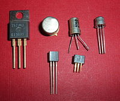
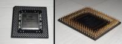

minipipo1 a rédigé un tutoriel à partir du site technick.fr avec l’accord de son auteur. Le tutoriel a été fusionné avec celui de quentinb04 pour former l’actuel tutoriel rédigé originellement par AlbinoSS et OujA. Dans ce tutoriel nous allons voir de quoi est physiquement composé un ordinateur de bureau classique, comment choisir les composants de son ordinateur, et enfin nous aborderons pas à pas la façon de monter le tout pour que ça marche. :) Toutes les étapes seront bien détaillées afin que vous puissiez suivre facilement.
Mais pourquoi monter par soi-même son ordinateur ?
Par plaisir si on est un peu geek (passionné d’informatique), mais surtout pour faire des économies ! On pourrait croire que le montage d’un PC n’est réservé qu’aux experts, eh bien non, ce n’est qu’une idée reçue ! Certes c’est laborieux la première fois qu’on ouvre son ordinateur mais je vais vous accompagner tout au long du tutoriel avec des illustrations et tout ce qui va avec.
En effet, à composants égaux, un ordinateur monté par soi-même sera moins cher, notamment car on n’a pas à acheter une suite logicielle et un système d’exploitation que l’on possède déjà. De plus, il sera plus évolutif car certains fabricants utilisent des spécifications qui leur sont propres (non normalisées). Et enfin certains constructeurs brident leurs machines pour éviter qu’on les bidouille. Cette évolutivité vous permettra donc de faire des économies également à long terme, puisque vous pourrez très bien améliorer votre ordinateur au cours du temps en ne changeant que les composants les plus faibles. Puis, vous pourrez toujours réutiliser l’alimentation, le boîtier, les lecteurs optiques de votre futur PC pour son successeur.
Il est évident que je me dégage de toute responsabilité concernant une mauvaise manipulation de votre part qui entraînerait la destruction de composants.
Si jamais vous avez des problèmes, n’hésitez pas à les présenter sur le forum Matériel où de nombreux visiteurs répondront à vos questions bien plus rapidement que les auteurs du tutoriel.
Présentation générale et indispensable (partie 1/2)
Dans cette partie, vous pourrez vous instruire à propos du matériel élémentaire que contient le PC du commun des mortels. Votre futur PC n’aura plus de secret pour vous.
Un premier conseil : soyez bilingue, cela aide. :p Mais pour pouvoir la monter soi-même, il faut tout d’abord savoir de quoi est composée la bête.
Un ordinateur est composé de quatre « grandes » unités :
les enceintes ;
l’ensemble clavier et souris ;
l’écran ;
et enfin l’unité centrale.
Je vous accorde que les enceintes ne sont pas obligatoires, mais utiles, quand même. Je suppose que vous connaissez déjà l’ensemble clavier, souris et aussi l’écran.
Mais avant de débuter, il faut se rappeler les fondements de l’informatique : le 1 et le 0. Pour beaucoup, cela peut paraître abstrait, mais l’intérieur de votre PC n’est qu’un assemblage de fils, transistors et autres composants élémentaires d’électronique. Or en électronique numérique, tout communique à l’aide de 1 et de 0. C’est pourquoi il est indispensable de faire une leçon sur les Mégaoctets, Gigahertz et tout ce vocabulaire barbare qui fait pâlir un bon nombre d’utilisateurs d’ordinateurs.
Un pouce (unité de longueur américaine, alias un inch) équivaut à 2,54 cm. Un bit, c’est un chiffre : 1 ou 0. Un Hertz, c’est une action par seconde (l’action dépend du composant dont l’on parle). Un octet, c’est un assemblage de huit bits. Cela permet de compter de 0 à 255.
- Réfléchissez bien à ce que je viens d’écrire, cela aidera pour la suite. -
On utilise des préfixes pour ne pas avoir à exprimer de trop grands nombres. Dans la vie courante, on a l’habitude de dire : je roule à 130 km/h, non pas à cent trente mille mètres par heure.
Ces préfixes sont :
un Kilo- (k), c’est mille ;
un Méga (M), c’est un million ;
un Giga (G), c’est un milliard ;
un Téra (T), c’est mille milliards ;
un Péta (P), c’est un million de milliards ;
un Exa (E), c’est un milliard de milliards.
Et le reste vous n’en entendrez quasiment jamais parler. Mais connaître aujourd’hui ce que représente un Téra n’est plus un luxe. Donc, si vous ne connaissez pas ce qu’il y a avant, il va falloir l’apprendre.
On utilise souvent des unités telles que l’octet combinées avec l’unité de temps qu’est la seconde. Cela donne par exemple des Méga-octets par seconde (Mo/s). Cela signifie que dans un intervalle de temps d’une seconde, un million d’octets transitent ou sont traités.
Vous pouvez désormais réfléchir à certaines choses que vous avez déjà dû voir. Par exemple une photo qui pèse 1,5 Mo est en réalité composée d’environ un million cinq cent mille octets composés eux-mêmes de huit bits, soit douze millions de 1 ou de 0 ! o_O Un transfert à 50 Mo/s fait transiter 400 000 000 de 1 ou de 0 par seconde.
Là, on comprend mieux les progrès réalisés aujourd’hui par la technologie.
La trahison à l’échelle mondiale
Cependant, les informaticiens qui s’occupent de créer du matériel sont souvent mathématiciens, or les mathématiciens adorent compliquer les choses pour que cela soit plus facile pour eux. Ainsi, un Kilo-octet n’est pas vraiment mille octets, mais 210 soit 1024 octets. Il en va de même pour les Méga-octets qui font 220 octets, soit 1 048 576 octets, soit environ un million d’octets. Et ainsi de suite : un Giga-octet représente 230 soit 1 073 741 824 octets, soit environ un milliard d’octets. Puis un Téra-octet, c’est 240 octets soit 1 099 511 627 776 d’octets, soit environ mille milliards d’octets !
Les commerciaux, quant à eux, aiment bien tromper les consommateurs et se simplifier la vie. Donc lorsqu’on vous vend un disque dur de 1 To il s’agit en fait de 1 000 000 000 000 d’octets (mille milliard soit 1012). Mais votre PC, qui compte comme les mathématiciens, ne verra en réalité que 1012/230 = 931 Go ! (230 représente un Giga-octet, l’opération précédente revient à compter le nombre de Giga-octets dans mille milliards d’octets). Soit environ 70 Go de moins que ce qui est affiché sur la boîte.
Cependant, les commerciaux ont tout prévu : si vous cherchez bien, vous trouverez un petit astérisque quelque part en caractère microscopique indiquant que 1 Ko = 1 000 octets, ce qui est totalement faux pour tout informaticien qui se respecte.
Cependant, en 1998 dans un esprit d’harmonisation la Commission électrotechnique internationale s’est dit qu’il fallait apporter sa pierre à l’édifice en décrétant que désormais un Kilo-octet représente 1 000 octets. Il introduit également un nouveau préfixe (assez ridicule à prononcer :lol: ) qui est le Kibi-octet (pour Kilo binaire octet) représentant quant à lui 1 024 octets. Puis, les autres préfixes sont aussi passés à la moulinette :
un Mébi-octet représente 220 octets ;
un Gibi-octet représente 230 octets ;
un Tébi-octet représente 240 octets ;
un Pébi-octet représente 250 octets ;
un Exbi-octet représente 260 octets.
Ainsi, Ubuntu choisit de jouer le jeu et affiche désormais les capacités de stockage en Gibi-octets. Donc, libre à vous d’utiliser cette norme qui reste très peu connue du public.
Ce dernier paragraphe est certes mathématique (pas forcément du goût de chacun) mais pas indispensable pour la suite. Ne vous inquiétez pas, ne tirez pas encore la sonnette d’alarme. ;)
Et mon PC dans tout ça ?
Lorsque l’on monte un PC, il faut bien garder à l’esprit qu’il faut que tout fonctionne ensemble. Il y a deux sortes de compatibilités : matérielle et logicielle. La compatibilité matérielle est triviale, il suffit en principe que tout s’emboîte (sans forcer ! :-° ) pour que cette compatibilité soit assurée, à de très rares exceptions près. La compatibilité logicielle est beaucoup moins évidente. C’est majoritairement dû au système d’exploitation (Linux, Windows Seven, Solaris, etc.). En effet, c’est lui qui tient les commandes de votre PC. Il sert d’interface entre votre ordinateur et vous. En réalité, ce système d’exploitation se décompose en plusieurs parties.
On peut discerner le noyau qui est une sorte de machine à tout faire, l’interface qui permet de gérer l’affichage « virtuel » et les « pilotes » (alias drivers en anglais), des petits bouts d’instructions qui viennent expliquer au noyau la notice de chaque composant du PC.
Ainsi, au-delà de la simple compatibilité matérielle, il faut également que les pilotes de vos composants soient disponibles pour votre système d’exploitation. C’est généralement le cas sous Windows, mais sous Linux les constructeurs tardent souvent à sortir des pilotes compatibles. :(
Désormais, vous pouvez lire la suite tranquillement, il n’y aura plus de mathématiques dans ce tutoriel avant bien longtemps.
Vous avez sûrement un écran en face de vous (ou une feuille de papier pour ceux qui impriment les tutoriels). Observez-le bien de très près : vous verrez de minuscules points qui ont chacun une couleur qui permettent de constituer l’image. Ces points sont appelés des pixels. Chacun peut se colorer de toutes les couleurs de l’arc-en-ciel. Sur tous les écrans il y a un nombre bien spécifique de pixels. Tous ces pixels sont organisés en colonnes et en lignes ; ainsi, plus il y a de colonnes et de lignes, plus il y a de pixels sur l’écran. Pour désigner le nombre de colonnes et de lignes, on adopte généralement la notation « colonnes » × « lignes », ce qui fait par exemple « 1920 × 1080 » pour 1920 colonnes et 1080 lignes. Pour trouver le nombre de pixels, il suffit donc de multiplier le nombre de lignes par le nombre de colonnes. Une résolution de 1920 × 1080, en l’occurrence, représente 2 073 600 pixels. C’est énorme ! o_O Le nombre de colonnes et de lignes d’un écran est aussi appelé communément la définition ou la résolution de l’écran.
Les écrans cathodiques (alias CRT)
Les écrans CRT sont des écrans à tube cathodique, c’est-à-dire de « gros écrans », tandis que les LCD sont plats. Pour la culture générale, sachez qu’un écran cathodique est composé d’un canon à électrons au fond d’une boîte. Les électrons bombardent la surface de l’écran pour former l’image. Un écran cathodique se choisit en fonction de trois paramètres :
le pitch ;
la fréquence de rafraîchissement ;
la résolution.
Premièrement, la précision de l’écran est représentée par le pitch et la résolution. Plus le pitch est bas et la résolution élevée, plus l’écran est de qualité. Les deux paramètres sont intimement liés : le pitch représente la finesse des pixels et la résolution le nombre de pixels : donc, pour deux écrans de taille similaire et de résolution identique, le pitch sera souvent le même.
Ensuite, la fréquence de rafraîchissement est très importante, c’est le nombre d’images par seconde que l’écran affiche. À une fréquence de 60 Hz, un écran CRT fait mal aux yeux. À 75 Hz, ou même 85 Hz, c’est beaucoup mieux : on peut rester devant son écran des heures sans sourciller. :) Un écran cathodique peut aisément changer de résolution et de fréquence. En général, plus la résolution demandée à l’écran sera élevée, plus la fréquence de rafraîchissement devra être basse. Ainsi, seuls les meilleurs écrans (souvent les plus chers également) offriront des résolutions élevées avec une fréquence de rafraîchissement potable de 75 Hz.
Les écrans LCD
Pour les écrans LCD, il y a encore quelques paramètres importants qui définissent la qualité d’un écran :
la résolution ;
le temps de réponse ;
le contraste ;
la surface de l’écran (brillant, à éviter en extérieur, ou mat).
Pour la résolution, c’est presque pareil que pour un écran CRT. Un écran LCD possède un nombre bien défini de pixels qu’il ne peut pas modifier. Ainsi, la résolution maximale offerte par l’écran doit obligatoirement être sélectionnée sinon l’écran n’affichera pas correctement l’image et essaiera de l’étendre sur toute sa surface disponible, ce qui provoque généralement une image floue.
Le temps de réponse quant à lui est souvent donné et mis en avant par les constructeurs. Selon le constructeur, ce temps de réponse ne signifie pas la même chose. Mais plus il est bas mieux c’est. Il fut un temps où les écrans LCD avaient un terrible défaut : lorsqu’un mouvement rapide était affiché à l’écran, on voyait une traînée s’afficher. C’était dû au temps de réponse de l’écran. Un bon temps de réponse est inférieur à huit millisecondes.
Cependant, les constructeurs ont toujours tendance à maquiller habilement la vérité. Il faut bien faire attention aux chiffres indiqués, et ne faire confiance qu’à des tests réalisés par des sociétés indépendantes.
Une fois que vous n’hésitez plus qu’entre quelques écrans, il n’y a pas de secret, il faut juger par soi-même la qualité de l’écran. Un écran LCD ne nécessite pas une luminosité très élevée, la majorité des constructeurs munissent leurs écrans d’un système de rétro-éclairage puissant. Il faut alors apprécier l’homogénéité du rétro-éclairage, la qualité des couleurs, des mouvements dans les films, les angles limites de vision pour lesquels l’image reste correcte, etc.
Le clavier et la souris sont les périphériques les plus courants en informatique. Ils sont presque indispensables pour pouvoir contrôler aisément un ordinateur.
Ces deux périphériques sont dits périphériques d’entrée. Ils transmettent des informations à votre ordinateur et non l’inverse.
Le clavier
On pourrait croire qu’un clavier est banal, qu’il n’y a rien à dire à son propos. Détrompez-vous ! Un clavier, c’est habituellement 105 touches, des touches additionnelles, des touches « macros » qui permettent de faire plusieurs actions programmées d’un seul coup, et même sur les claviers les plus haut de gamme des petits écrans !
Depuis quelques années, les claviers voient leur connectivité disparaître. En apparence, c’est un atout majeur, une liberté de mouvement inédite : on était limité par un câble souvent trop court.
Cependant, il faut prendre en compte les batteries à changer ou à recharger, le temps de réactivité terriblement long, quand ce ne sont pas les bugs de touches en tous genres : touches qui restent coincées, qui ne marchent plus pendant un instant… D’autant plus que le signal envoyé par le clavier peut rencontrer des problèmes de propagation sur des bureaux métalliques, ou aux alentours de matériels électroniques de taille importante.
Bref, vous l’aurez compris : je vous déconseille fortement les claviers sans fil, surtout pour les joueurs de jeux vidéo. Cependant, il y a toujours des exceptions : les claviers sans fil haut de gamme sont maintenant de meilleure qualité et permettent de jouer tranquillement.
Pour la bureautique, le clavier sans fil n’est pas handicapant, mais peut s’avérer gênant lorsqu’une touche « Suppr » se bloque dans un document texte. :lol:
C’est pourquoi le filaire a encore de longues années devant lui, bien qu’un jour on puisse supposer qu’il se verra remplacé par du sans-fil.
Le clavier par excellence : filaire à touche rétro-éclairée.
Comme vous pouvez le voir sur l’image ci-dessus, il existe certains claviers dont les touches sont rétro-éclairées. Cette technologie permet ainsi de voir les touches de son clavier même la nuit sans source de lumière. C’est vraiment un plus qui fait la différence (sur la facture aussi ^^ ).
Les claviers ergonomiques
C’est un genre de clavier particulièrement apprécié des personnes qui tapent beaucoup au clavier. Il part d’un principe simple : lorsque vous posez tranquillement vos mains sur votre clavier, elles ne sont pas perpendiculaires au clavier. Ainsi, les touches des claviers ergonomiques sont positionnées astucieusement afin d’avoir une position des mains la plus naturelle possible.
On nomme les types de clavier par les six premières touches. Cela donne alors « Azerty » pour les pays francophones ou « Qwerty » pour les autres pays. La disposition des touches change d’un pays à l’autre pour répondre aux attentes de la langue (les accents, symboles varient). La disposition des touches Azerty date du XIXe siècle et elle n’est clairement pas adaptée à une écriture rapide : les touches les plus utilisées ne sont pas disposées de manière à être atteintes sans grand déplacement des doigts. Il existe pour les anglophones des claviers Dvorak qui optimisent la disposition des touches et permettent d’écrire du texte dans la langue de Shakespeare en faisant parcourir à vos doigts une distance jusqu’à deux fois moindre par rapport à un clavier Qwerty habituellement utilisé par les anglophones. Une telle disposition avantage notamment la santé de vos mains, mais également la rapidité de frappe. Seulement, pour les francophones il n’existe pas de clavier équivalent produit en masse.
La souris
La souris est en apparence plus simple : en vérité, elle a plus évolué que le clavier depuis son premier prototype. Mais avant de parler de la souris, parlons de l’une de ses congénères que peu de monde connaît : la trackball. Elle consiste en une boule, comme les vieilles souris, mais visible. C’est cette boule qui va nous permettre de déplacer le curseur à l’écran. Ainsi, on bouge la boule et non la souris. Le poignet se repose, contrairement à ce que l’on fait à l’usage d’une souris. C’est assez déroutant les premières fois, mais on s’y habitue vite.
Une trackball
Parlons maintenant de la vraie souris. La première technologie à séduire le grand public est la souris à boule.
Comme vous pouvez le voir, ce sont en réalité deux cylindres (2) qui viennent frotter contre la boule (1) pour pouvoir récupérer les déplacements effectués. Par un système de roues (3 et 4) et de capteurs (5), le mouvement sur chaque axe est mesuré et transmis à l’ordinateur. Bref, ce n’est pas si simple que ça en a l’air, une souris à boule !
Ensuite est apparue la souris optique à diode rouge ou bleue (technologie Bluetrack de Microsoft).
Ces souris sont les plus utilisées actuellement. Elles ne sont pas parfaites, elles sont un petit peu plus lourdes que les souris à boule, même pour les plus légères. Par ailleurs, les gros joueurs qui jouent très longtemps continuent d’utiliser des souris à boule pour cette raison. Les souris optiques permettent cependant une meilleure acuité et un confort d’utilisation bien meilleur. Le nettoyage n’est plus nécessaire, alors qu’avec une souris à boule, les mécanismes s’encrassent vite.
La précision d’une souris se mesure en dpi (dot per inch) alias ppp en français, c’est-à-dire en points par pouce. C’est le nombre de points que la souris distingue sur une distance d’un pouce (2.54 cm). Une souris optique à diode rouge plafonne à 3200 dpi pour les meilleurs modèles (Razer, Logitech).
Les dessous d’une souris optique
Puis sont arrivées les souris optiques laser. On n’utilise donc plus une diode, mais un laser. Ainsi, aucune source de lumière n’est visible sous la souris, la précision est inégalée, aux alentours de 2000 jusqu’à plus de 5000 dpi.
En plus de tout cela, les souris ont pu se doter de technologie sans fil. Cela alourdit encore la souris et diminue la réactivité, donc augmente le temps de réponse de votre souris. Il faut de plus recharger très souvent la batterie sous peine de ne pouvoir utiliser sa souris la fois suivante. :(
Bref, la technologie laser apporte une précision et des temps de latence très faibles et la technologie sans fil gâche tous ces avantages. Encore une fois, je vous déconseille le « sans-fil ». Certes, il y a toujours des modèles d’exception comme la Razer Mamba qui sort du lot, mais le prix aussi est exceptionnel ! :D
Cependant, mes propos concernant le sans-fil sont à pondérer : pour une utilisation totalement bureautique de son ordinateur, les périphériques sans fil ne sont pas si mauvais que ça et permettent parfois un gain de confort.
Mais les différentes technologies de capteurs ont avant tout été inventées pour leur capacité à fonctionner sur un maximum de surfaces possibles. Ainsi, la technologie LASER restait inégalée dans ce domaine, où la majorité des surfaces étaient envisageables pour la glisse de son mulot, mais la technologie Bluetrack permet de faire fonctionner sa souris sur une table en verre sans trop de problème.
On ajoutera que si les performances d’une souris sont intéressantes pour éviter de se crisper dessus lorsqu’on la manie, la prise en main est bien évidemment primordiale et il va de soi qu’elle joue un rôle prépondérant dans le choix. Certains préféreront une souris qui se manie du bout des doigts quand d’autres ne vivront qu’avec un mastodonte sur lequel reposer sa main est décontractant.
Attaquons-nous maintenant à l’unité centrale, la base de l’ordinateur. :pirate:
Dans cette boîte qu’est l’unité centrale il y a plusieurs « pièces » ; ces pièces sont communément appelées composants. Donc l’unité centrale est un ensemble de plusieurs composants.
Jusque là ça va, ce n’est pas trop dur ? ;)
Le plus connu des composants est le processeur, mais nous ne parlerons pas de lui en premier.
La carte mère est la carte à laquelle tous les composants sont reliés. Si un composant n’est pas relié au moins indirectement à la carte mère, c’est qu’il y a un problème. C’est une sorte de grande plaque de circuit imprimé (également appelée PCB). C’est là que viendra se loger le fameux processeur, par exemple. Son rôle est très simple : relier tous les composants entre eux. Mais la carte mère sert aussi à la connectivité : c’est là que vous brancherez votre souris, votre clavier, vos enceintes, votre lecteur mp3, etc. Mais pas forcément votre écran.
Il ne faut surtout pas négliger la carte mère, c’est la colonne vertébrale de votre PC. Elle détermine les composants que vous allez acheter. Une carte mère est compatible avec telle famille de processeurs d’une certaine marque, supporte une certaine mémoire vive, bref, TOUT dépend d’elle. Vous remarquerez que bien souvent, dans les PC de supermarchés, la carte mère n’est même pas mentionnée. Grâce à cette habitude, de nombreuses économies sont réalisées, ce qui permet de casser les prix et de gagner plus d’argent. Bref, c’est au détriment de l’utilisateur.
Sur une carte mère il y a un chipset. C’est-à-dire un « ensemble de puces ». Heureusement, chaque carte mère n’a pas son propre chipset. Seules les plus grandes marques ont le luxe de pouvoir créer leurs chipsets : donc, forcément, ils n’en inventent pas des centaines par an. Intel, AMD, NVidia, SiS et Via sont les plus gros constructeurs de chipsets.
Ainsi, un chipset répond à des normes très strictes, supporte une ou plusieurs familles de processeurs bien déterminées, de la mémoire spécifique, supporte le PCI-Express 2.0… Bref, la majorité des composants que vous achèterez devront être compatibles avec votre chipset.
Ce qu’il faut retenir de tout cela, c’est que lors de l’achat, il faut se renseigner précisément sur le chipset utilisé par votre future carte mère ainsi que ses caractéristiques matérielles, comme le nombre d’emplacements pour la mémoire vive, le nombre de disques durs supportés, etc.
C’est le composant le plus connu, bien qu’il soit plutôt mystérieux. Il ressemble à un petit rectangle assez lourd pour sa petite taille avec d’un côté une surface plane métallique et de l’autre, soit des picots dorés (appelés pins) soit une multitude de points dorés eux aussi.
Mais bien souvent il n’est pas visible dans le boîtier puisqu’il est recouvert par le ventirad (ne vous inquiétez pas, je vais vous dire ce qu’est un ventirad). Il se présente parfois sous la forme d’une petite plaque de PCB (circuit imprimé) enfichable, mais cette forme est surtout utilisée dans les ordinateurs portables et ne nous concerne donc pas. Il se loge sur le socket de la carte mère. Chaque processeur a un socket bien particulier (attention à ne pas confondre avec le chipset, bien que le chipset détermine automatiquement le socket qui est sur la carte mère) ; il faudra donc faire attention au moment du choix de la carte mère pour savoir si elle est compatible avec le processeur. Par exemple, un processeur à Socket 1366 ne rentre tout simplement pas dans un socket 775.
Description
Son rôle à lui est de traiter les données (additions, soustractions…), de les organiser, etc. C’est en quelque sorte le superviseur et calculateur de l’ordinateur. Il fait toutes ces opérations tellement rapidement qu’il est obligé de consommer une puissance électrique considérable, de l’ordre de la centaine de Watts en plein travail (en charge ou burn pour les initiés) et plusieurs dizaines de Watts au repos (idle). Un processeur étant alimenté en 12 V, c’est une dizaine d’ampères qui s’engouffre donc dans les processeurs les plus gourmands. Ainsi, en bon consommateur de courant, il chauffe énormément : il n’est pas possible de le laisser à l’air libre sans un système de refroidissement digne de ce nom. Toutefois, même avec un refroidissement standard, cela ne l’empêche pas d’atteindre des températures supérieures à 50 °C voire 60 °C. À 80 °C, il est nécessaire de changer le refroidissement du processeur.
La particularité des processeurs récents est de pouvoir effectuer de plus en plus de tâches simultanément. On appelle « cycle d’horloge » le temps que met le processeur pour effectuer une tâche la plus élémentaire possible. Le nombre de tâches élémentaires effectuées en une seconde par un processeur est représenté par sa fréquence d’horloge. Ainsi, un processeur cadencé à 3 GHz (à lire Giga-hertz) effectue trois milliards d’opérations élémentaires par seconde.
Parlons des processeurs multi-cores. Tout d’abord, un processeur à cœurs multiples est composé de différentes manières selon le modèle. Soit le processeur entier est fabriqué d’un bloc sur un même die, c’est-à-dire sur une même plaque (bien spéciale), soit le processeur est fabriqué bloc par bloc sur des dies différents, puis « recollé ». On peut citer le Pentium D qui est composé de deux Pentium 4, ou plus récemment le Core 2 Quad qui est composé de deux Core 2 Duo. Mais attention, deux cœurs dans un processeur ne sont pas synonymes de deux fois plus de performances ! En effet, l’homme a deux mains, mais ce n’est pas pour autant qu’il peut écrire deux fois plus vite. En revanche, pour frapper du poing sur la table, on peut le faire presque deux fois plus vite avec deux mains. :D Pour le processeur, c’est pareil ! Les tâches simples peuvent être effectuées sur deux, trois voire N cœurs, sans pour autant aller N fois plus vite (on parle d’applications ou de programmes multithreadés). Mais les tâches compliquées qui nécessitent d’être réalisées dans un ordre précis ne peuvent être réalisées que sur un cœur à la fois (on parle alors de programmes monothreadés).
Quand on parle de processeurs, on parle tout le temps de Gigahertz (GHz). À processeurs de même génération d’un même constructeur (Core 2 Duo par exemple), ces chiffres prennent toutes leurs significations et indiquent presque clairement la puissance du processeur.
Il fut un temps où les processeurs étaient relativement simples et le moyen le plus facile d’augmenter leurs performances passait presque uniquement par l’augmentation de la fréquence. On pouvait alors comparer aisément un processeur AMD à un processeur Intel seulement en comparant leur fréquence. En effet, un cycle d’horloge d’un processeur AMD permettait d’effectuer autant d’additions qu’un cycle d’horloge d’un processeur de chez Intel. Mais depuis maintenant quelques années, la montée en fréquence des processeurs est de plus en plus limitée par des contraintes de fabrication. Pour continuer d’augmenter la puissance de nos processeurs, les constructeurs ont donc commencé à paralléliser au maximum chaque opération. Ils vont même jusqu’à faire des processeurs qui devinent l’opération qu’ils devront effectuer pour l’accomplir le plus tôt possible. Bref, vous l’aurez compris, Intel et AMD n’accélèrent pas les calculs de la même manière et chacun possède ses ingrédients et sa formule secrète. ^^
Par conséquent, un processeur Intel effectuera par exemple trois additions sur des entiers (2 + 2 = ?) et AMD en fera alors quatre en un cycle d’horloge. Mais en contrepartie, Intel peut très bien effectuer deux multiplications pendant qu’AMD n’en effectue qu’une seule. On voit bien que le processeur Intel devra fonctionner à une fréquence plus élevée pour égaler un processeur AMD dans les additions, mais AMD a du souci à se faire concernant la multiplication…
Donc, on ne compare tout simplement pas ce qui n’est pas comparable. Rien ne vaut un test de chaque processeur sur plusieurs programmes différents. Puis, si les performances d’un processeur sont meilleures que celles de ses confrères dans le domaine qui nous intéresse, on s’orientera vers celui-ci.
Pour illustrer un petit peu, voici un exemple concret. Les processeurs Corei7 d’Intel font des miracles face au Phenom II d’AMD dans le domaine de la compression vidéo, mais les Phenom II se respectent dans les jeux vidéo et ont un prix plus abordable. En tant qu’amateur de jeux vidéo, je choisirais alors plus facilement un Phenom II qu’un Corei7, mais c’est encore un choix personnel vraiment discutable.
La mémoire vive (ou RAM : Random Access Memory) se présente sous forme de barrettes de différentes tailles selon leurs normes. Ces barrettes de mémoire stockent les données actuellement utilisées par l’ordinateur. Une multitude de programmes fonctionnent actuellement sur votre ordinateur et sont stockées en grande partie dans la RAM. Cependant, le rôle de la mémoire vive est de soutenir le flot continu d’informations que traite le processeur. Afin que le processeur n’attende trop longtemps les requêtes qu’il fait à la mémoire vive, celle-ci doit être très rapide. Pour le moment, les constructeurs ne réussissent qu’à faire de la mémoire vive pour atteindre des débits intéressants. On dit d’une mémoire qu’elle est vive si elle se perd lorsque l’on arrête son alimentation en électricité. C’est pourquoi votre ordinateur met un temps important à démarrer : à chaque démarrage de l’ordinateur, tout le système d’exploitation et les programmes utiles au bon fonctionnement du PC sont chargés de nouveau dans la RAM.
Vous vous en doutez, s’il y a de la mémoire vive, c’est qu’il y a plusieurs types de mémoire ! Encore une fois vous avez raison et elle se trouve sous de nombreuses formes telles que les clés USB de stockage, les cartes SD, les disques durs, les SSD, etc. Toutes ces mémoires n’ont pas besoin d’électricité pour conserver des données, elles sont non volatiles et de grande capacité : ce sont des mémoires de masse. Pour autant, il faut toujours du courant pour les faire fonctionner. Il existe de la mémoire morte (ROM - Read Only Memory) qui est encore largement utilisée (CD-ROM, DVD-ROM, etc.).
On peut voir que ces barrettes de RAM sont affublées d’un dissipateur thermique.
Pour acheter des barrettes de mémoire, il faut avant tout vérifier la compatibilité avec la carte mère et le processeur, puis se renseigner sur leur fréquence de fonctionnement (en MHz) qui est synonyme de rapidité, bien que la vitesse ne fasse pas le débit et la réactivité.
Les barrettes de RAM évoluent, et leur travail consistant à distribuer le plus rapidement possible des informations au processeur, les constructeurs font en sorte que leurs barrettes soient de plus en plus rapides. Mais qu’est-ce qui fait la rapidité de la mémoire vive ? Premièrement, sa fréquence qui détermine le débit brut de la mémoire vive. Ensuite, ses temps de latence qui déterminent son temps de réponse. Enfin, les normes utilisées pour communiquer. Par exemple, le dual channel s’est démocratisé avec la DDR2 (une norme) et permet de doubler le débit :) en utilisant deux barrettes de mémoire vive similaires dans les bons emplacements de la carte mère (prévus à cet effet). Et je vous laisse deviner ce que fait le triple channel.
Pour les temps de latence, c’est une succession de quatre chiffres qui expliquent les différents temps de latence selon l’instruction demandée à la mémoire vive (il y en a d’autres qui influent très peu sur les performances). Autant dire que ces chiffres sont assez importants pour les performances. Ils sont exprimés en fonction de la fréquence. Par exemple, pour une barrette à 800 MHz et une barrette à 400 MHz, à temps de latence égaux, la première aura par exemple 8-8-8-24 et la seconde 4-4-4-12. Les deux barrettes mettront autant de temps à répondre, mais n’auront pas du tout le même débit.
Devant l’inconnu que représente un disque dur pour le grand public, je me sens obligé de vous décrire ce qu’il y a dans la boîte et comment ça marche.
Quoi, qu’est-ce ?
Un disque dur est une sorte de pavé métallique. Sa taille est variable selon le modèle (5.25, 3.5, 2.5, 1.8 pouces ; le format 1.8 pouces est peu répandu, le format 2.5 pouces sert généralement aux ordinateurs portables, les 3.5 pouces pour nos ordinateurs de bureau et le 5.25 a disparu), ainsi que sa capacité (c’est-à-dire l’espace disponible au stockage des données), sa vitesse et son cache mémoire. C’est là que sont stockées toutes les données dont le système d’exploitation (aussi appelé OS, Operating System) qui servent à faire fonctionner votre ordinateur, ainsi que vos photos, vos films, vos jeux, etc.
Voici de jolies illustrations que je vais commenter :
Les disques durs à travers le temps, les tailles dans l’ordre : énorme :p , 8", 5.25", 3.5", 2.5" et 1.8"
Mais avec tout ça, on ne nous a pas dit comment sont vraiment stockées les données sur un disque dur ! Il faut tout d’abord savoir que les plateaux sont recouverts de particules magnétiques que l’on peut se représenter comme de petits aimants en forme de bâtonnets microscopiques ayant donc deux pôles (nord et sud). Lorsque le disque (ou la plage de données) est vierge, ces bâtonnets sont disposés n’importe comment. Lorsque la tête de lecture écrit des données, elle oriente ces bâtonnets dans un sens bien précis selon que l’on écrit un 1 ou un 0. Ainsi, par exemple, la tête de lecture peut orienter le pôle nord du bâtonnet dans le sens de lecture du plateau pour écrire un 1 et inversement, le pôle nord sera dirigé dans le sens inverse de la lecture pour un 0. Pour lire les données contenues sur le plateau, il suffit donc de déterminer où est le pôle nord du bâtonnet (avec une sorte de boussole évoluée :p ).
Ainsi, nous avons des bâtonnets magnétiques orientés selon des cercles. Pour faire simple, sur une bibliothèque circulaire, si l’on pose les livres à plat, ce sera la méthode de stockage la plus simple et c’est également la méthode utilisée par les disques durs ne dépassant pas 320 voire 500 Go. Mais maintenant si on est assez doués pour mettre les livres debout, c’est-à-dire perpendiculairement à la table, on arrive à mettre beaucoup plus de livres l’un à côté de l’autre. Donc les constructeurs de disques durs ont décidé de faire pareil : désormais, pour les disques durs récents, les bâtonnets sont stockés perpendiculairement au plateau, on en met environ deux fois plus et nos disques durs continuent de voir leur capacité augmenter.
Les plateaux tournent autour de l’axe à une vitesse très élevée. La tête de lecture est manipulée par le bras et vient lire les informations qui défilent. Il y a plusieurs plateaux en réalité, et chaque plateau dispose de sa propre tête de lecture. Bien évidemment, ici on voit également la prise d’alimentation, les broches de sélection du mode esclave-maître (cavalier sur l’image) et le port de transfert de données.
Comment choisir un disque dur ?
Les critères les plus importants dans un disque dur sont la capacité, la vitesse et le nombre de plateaux. Un disque dur dépassant la dizaine de Giga-octets est indispensable aujourd’hui. Bien évidemment, la taille du disque dur est presque proportionnelle à la capacité. Un disque dur d’ordinateur de bureau doit obligatoirement tourner à 7200 tours par minute. En dessous, c’est un supplice (à quelques rares exceptions près comme les disques durs de grande capacité). Puis, la capacité influe directement sur les performances. En effet, si un disque dur de 1 To prend autant de place qu’un disque dur de 2 To et a autant de plateaux, cela signifie que les plateaux comportent deux fois plus de données chacun. Et s’il comporte deux fois plus de données pour la même surface, cela signifie qu’à vitesse de rotation égale, le premier disque dur de 1 To lira deux fois moins de données que le disque dur de 2 To pour un tour de plateau. Ainsi, vous l’aurez compris, un disque dur de grande capacité n’est pas seulement plus avantageux sur le plan de la capacité, mais aussi sur le plan des performances.
Les constructeurs créent également des disques durs avec un nombre réduit de plateaux. Parfois même ils produisent des disques durs avec un plateau unique ! o_O C’est tout d’abord pour le plus grand plaisir de nos oreilles (le bruit de fonctionnement étant réduit) et pour l’optimisation des performances. En effet, moins il y a de plateaux et plus la capacité est grande, plus les données sont agglutinées au même endroit. Alors en deux temps trois mouvements le disque dur aura lu les données plus vite que son ombre. :)
Il existe en gros deux normes bien distinctes et non compatibles entre elles dans le monde du stockage : l’IDE (ou encore ATA renommé récemment en P-ATA) et le S-ATA. Le S-ATA s’est maintenant affirmé par ses performances et ses avantages en terme de facilité de montage. L’IDE est en voie de disparition. Cependant, je vais vous expliquer les rudiments du montage d’un disque dur, ou d’un lecteur optique IDE, car maintenant, ça devient de la culture générale (au cas où vous passeriez à « Questions pour un champion »). Un disque dur doit être « amorçable » dans certains cas, c’est-à-dire que l’on doit pouvoir booter (démarrer) grâce à lui. Ainsi, pour un disque dur contenant un système d’exploitation, il est préférable de le mettre en « maître » (master en anglais). Et les autres disques durs seront mis en « esclaves » (slave) voire « maître » si la place manque. Pour le S-ATA, sachez que tout cela est automatiquement réglé.
Appréciez vous-même la différence : En haut le P-ATA et en bas le S-ATA
Une nappe pour composant IDE
Un disque dur en maître doit se mettre tout au bout de la nappe (une nappe est un câble plus ou moins long mais large, comme une nappe ^^ ) et un esclave au milieu. Pour mettre son disque dur en esclave ou en maître, il faut également déplacer un jumper. Un jumper est un petit bout de plastique avec du métal à l’intérieur qui permet de raccorder deux broches métalliques. Il est également appelé « cavalier ». Ainsi, selon votre notice de disque dur, ou selon les indications portées sur le disque dur, vous devez mettre à tel ou tel endroit le jumper. Le jumper se met sur l’une des broches juste à côté de la prise d’alimentation qui se reconnaît par ses grosses pattes.
Ici, un modèle IDE, reconnaissable à ses nombreuses broches et sa prise d’alimentation Molex, à droite.
Notice de montage pour les disques durs IDE
Un disque dur IDE est beaucoup plus difficile à monter. Les nappes bloquent la ventilation de vos disques durs, les prises Molex sont trop dures à enlever, on doit mettre un cavalier microscopique sur des broches, il faut respecter un ordre de montage sur les nappes. Bref, c’est l’enfer ! :diable:
Heureusement, je vais vous expliquer tout doucement comment faire. Tout d’abord, sachez avant de manipuler votre disque dur ce qu’il va contenir : s’il contient le système d’exploitation, il sera en bout de nappe, et en maître. S’il contient des données, vous les mettez où bon vous semble, en esclaves si vous êtes en milieu de nappe, en maîtres si vous êtes en bout. Certes, il est possible de mettre un système d’exploitation en milieu de nappe, mais ce n’est pas du tout conseillé pour de nombreuses raisons (inutiles à énumérer).
Maintenant je vais vous expliquer comment mettre un disque dur en esclave ou en maître. Regardez le dessus de votre disque dur, vous devriez trouver des indications globalement similaires (cela varie un peu d’un constructeur à l’autre) :
Master signifie maître, slave esclave et single unique
Cela représente la position du cavalier sur votre disque dur. Par exemple ci-dessous, j’ai mis mon disque dur en esclave :
Et donc cela consiste à déplacer le cavalier en conséquence.
Après, il faut brancher la nappe sur la carte mère. Vous remarquerez qu’une nappe IDE a toujours un fil d’une couleur différente. Ce fil doit en principe être du côté du processeur sur la carte mère et du côté de la prise Molex sur le disque dur.
Cette notice d’utilisation est valable pour le montage des lecteurs optiques, sauf que parfois les indications sont encore moins lisibles :
Il faut lire de haut en bas pour comprendre ceci : CS = Cable select (automatique) ; SL = Slave ; MA = Master.
Il s’agit de faire la même chose qu’avec un disque dur, pour un lecteur optique bootable, on le met en bout de nappe en maître…
Vous connaissez les principaux composants qui font marcher un ordinateur. Ces composants sont certes des pièces maîtresses de tout ordinateur, mais pour autant, ils ne sont rien sans d’autres composants tels une alimentation, un ventirad, etc.
Vous connaissez les principaux composants d’un ordinateur, mais, pour autant, d’autres composants non moins indispensables vous sont encore inconnus. Vous allez les découvrir pas à pas en images dans ce chapitre. Au programme : nous allons voir ce que sont une alimentation, une carte graphique, un ventirad, etc.
La partie qui suivra sera, quant à elle, plus ardue à comprendre et à la fois moins importante, puisqu’elle reviendra sur la description des composants les plus importants pour vous instruire encore plus sur le pourquoi du comment du fonctionnement d’un ordinateur. :)
Une alimentation a pour rôle de donner à manger à votre ordinateur, pour qu’il puisse continuer à ronronner.
De forme pratiquement cubique, elle est généralement dotée d’un ventilateur. L’alimentation est facilement reconnaissable à son interrupteur (rarement absent), ainsi qu’à sa prise « moule à gaufres » (oui, oui, c’est la même prise que pour les gaufriers :D ). Comme son nom l’indique, elle alimente l’ordinateur en électricité. Il est donc primordial de ne pas la négliger : la vie de votre PC en dépend.
Le rôle d’une alimentation est de transformer le courant alternatif en courant continu 12 V, 5 V et 3,3 V. Une bonne alimentation doit avoir un bon rendement, qui permet de réduire la chaleur, le bruit (le ventilateur tourne moins vite) et la consommation. Ainsi, plus de 80 % de rendement est un compromis satisfaisant ; par conséquent, une alimentation de marque est de rigueur. Elle sera choisie également en fonction de la puissance qu’elle peut fournir. Pour un PC de bureau, 300 W suffisent largement. Si vous avez du matériel qui consomme beaucoup, optez pour une alimentation de 500 W — voire de 600 W au maximum. Il ne faut pas surdimensionner son alimentation. Ne choisissez pas une alimentation de 1000 W alors que vous n’allez en consommer que 300 : elle n’aura pas le meilleur rendement possible à 30 % (par exemple) de sa charge maximale.
Il va de soi qu’une alimentation ne prend à la prise de courant que ce dont elle a besoin. Pour une alimentation de 600 W avec un rendement de 80 %, si vous demandez 480 W pour votre matériel, vous aurez 480 W. Mais, à cause du rendement, votre alimentation consommera 600 W à la prise de courant. Il existe des calculateurs de puissance sur Internet qui vous aideront à dimensionner votre alimentation (consultez à ce sujet les liens ci-dessous). Pour cela, il faudra y spécifier les composants que vous avez prévu de monter et enfin cliquer sur le bouton « How many Watts ? » (premier site) ou « Calculate » (second site). Ces sites sont en anglais, mais compréhensibles par le commun des mortels francophones :
Pour faire un petit cours d’électricité, le rendement est la puissance utile divisée par la puissance consommée ; donc plus le rendement est élevé, plus ce rapport tend vers 1 (ou 100 %). Grâce à une alimentation au rendement élevé, vous perdrez moins de puissance et consommerez moins d’électricité. Ainsi, vous économiserez des euros et la planète vous en sera reconnaissante. Ces alimentations sont repérables grâce à leur logo :
Il existe aussi des alimentations dites modulaires : ce sont des alimentations dont les câbles inutilisés peuvent être détachés afin de ne pas perturber le flux d’air dans le boîtier.
Pour choisir parmi les alimentations qui conviennent à vos besoins en puissance, le site CanardPC a réalisé un test remarquable qui vous épargnera bien des surprises.
Les cartes filles, enfichables dans les ports AGP, PCI ou PCI Express (parfois abrégé en PCI-E), sont des cartes optionnelles qui viennent ajouter des fonctionnalités à votre PC. L’AGP, le PCI et le PCI Express sont des normes de transfert de données à travers des ports bien spécifiques. Les cartes filles sont des plaques de PCB (plaque de circuit imprimé), mais beaucoup plus petites que la carte mère.
On peut se demander ce que signifient les dénominations x16 ou x8 du PCI Express ou 4x et 8x de l’AGP. Elles représentent à la fois la vitesse de la norme et sa version. L’AGP 1x est la référence, qui est déjà deux fois plus rapide que le PCI, et fonctionne à 266 Mo/s. Vous pouvez donc calculer le débit du PCI Express x16 : plus de 4 Go/s.
Sur cette carte mère, on peut voir un port AGP en haut et deux ports PCI au-dessous :
Voici un port PCI Express x16 :
Il existe une multitude d’autres cartes filles comme les cartes réseaux (Wi-Fi, LAN, etc.), mais aussi des cartes d’extension pour ajouter des ports USB à son PC ou toute autre fonctionnalité.
La carte graphique est reconnaissable notamment à son ventirad, mais aussi à sa connectivité qui se retrouve sur nos écrans. Les cartes mères ayant un chipset vidéo intégré n’ont pas nécessairement besoin d’une carte graphique. La carte graphique est une carte qui s’occupe de l’affichage à l’écran : elle est surtout sollicitée pour les jeux, les films, le montage vidéo ou photo, ainsi que pour la production 3D.
Que choisir ?
Le choix d’une carte graphique ne se fait pas à la légère. Soyez attentif à la connectivité disponible, aux résolutions et aux fréquences de rafraîchissement gérées par la carte.
Ainsi, pour des écrans de très grande taille (de 24 à 30 pouces de diagonale avec une résolution allant de 1920 × 1200 à 2560 × 1600), une carte graphique qui supporte la cadence imposée par l’écran est indispensable. Pour un écran dont la résolution est de 1920 × 1200, il faut une carte graphique haut de gamme (aux alentours de 300-350 €) — ou de gamme moyenne (200-250 €) si vous ne vous servez pas de logiciels 3D poussés, tels que des jeux ou des simulations en temps réel. Pour des écrans plus petits (17 à 19 pouces de diagonale avec une résolution de 1024 × 768 à 1440 × 900), la carte graphique nécessaire à leur bonne utilisation sera plus entre le bas de gamme (80-120 €) et la gamme moyenne. Et les écrans 22 pouces en 1680 × 1050 ? Il leur faudra plutôt une carte de gamme moyenne, voire du haut de gamme.
Un grand nombre de tests circulent sur Internet pour chaque modèle de carte graphique. S’ils n’ont pas été réalisés par le constructeur, ils sont en général révélateurs des performances de la carte. Par conséquent, pour un budget déterminé, le choix est en principe très réduit.
À noter qu’il existe également des cartes graphiques professionnelles, comme les Nvidia Quadro ou les ATI FireGL, conçues pour des logiciels professionnels tels que Maya, 3D Studio Max, etc. Elles ne sont donc pas destinées aux joueurs (en principe :D ) et coûtent souvent plusieurs milliers d’euros. Les performances sont bien sûr au rendez-vous, mais ce sont surtout les pilotes de la carte graphique, adaptés aux logiciels professionnels, qui expliquent ce prix exorbitant. Les cartes taillées pour les joueurs occupent de plus en plus de slots, c’est-à-dire de ports, tout en n’utilisant qu’un seul connecteur pour refroidir la carte plus aisément. Par conséquent, prévoyez de la place dans votre PC si vous voulez que votre boîtier accueille une telle carte.
Voici une Nvidia 8800GT qui ne prend qu’un slot à côté d’une 280GTX — qui en occupe quant à elle entièrement deux :
Cliquez pour agrandir.
Même dans un boîtier de taille respectable, cette première carte graphique a du mal à rentrer (elle est très longue).
Les lecteurs/graveurs (de CD/DVD/disquettes/Blu-ray/HD DVD)
Une disquette contient 1,38 Mo de données :
Remarquez le logo HD, déjà très en vogue.
Et voici son sublime lecteur :
Les tailles des autres supports de stockage sont les suivantes :
un CD : 700 Mo ;
un DVD simple couche : 4 700 Mo (soit 4,38 Go) ;
un DVD double couche : 8,8 Go (4,38 × 2) ;
un HD DVD : 15 Go ;
un Blu-ray : 25 Go (simple couche) ou 50 Go (double couche).
Les lecteurs optiques ont la forme d’un pavé métallique un peu plus gros qu’un disque dur, mais ont deux tailles possibles : une taille pour les ordinateurs portables (dite slim), et l’autre pour les ordinateurs de bureau (5,25 pouces). Ils servent à lire les données qui sont fixées sur le format correspondant. Quant aux graveurs, ils servent à fixer des données de votre ordinateur sur un support physique. Nombreux sont ceux qui se demandent à quoi correspondent les 4x, 8x, 16x (et j’en passe) écrits partout sur les lecteurs de disques. Eh bien, vous allez enfin accéder à la connaissance suprême de ces dénominations !
Chaque fois qu’un support est créé, on lui fixe une utilisation idéale : la musique pour un CD, la vidéo pour un DVD, la vidéo très haute définition (Full HD) pour un Blu-ray. À partir de la norme imposée, on peut dire qu’un CD contient généralement 80 minutes de son et un DVD simple couche 60 minutes de vidéo (soit 120 minutes pour les double couche). Ainsi, 1x est la vitesse de référence à laquelle les platines de salon lisent généralement les disques. Les autres dénominations (2,4x, 4x, 50x, etc.) indiquent que les lecteurs/graveurs lisent x fois plus vite le disque. Pour remplir entièrement un bon DVD à la vitesse de 4x, vous remarquerez donc qu’il faut moins de 15 minutes (60 / 4, car le graveur va quatre fois plus vite que la vitesse normale). Pour un CD de 80 minutes équivalant à 700 Mo gravés jusqu’au bout en 24x, cela durera… (À vous de répondre pour voir si vous avez compris. ;) )
Tic… Tac… Tic… Tac…
3 minutes et 20 secondes ! Il suffit de diviser 80 minutes (le temps de lecture d’un CD par une chaîne hi-fi) par la vitesse de gravure, c’est-à-dire 24. On obtient 3,33333333... Or 0,333333333... minutes, ça fait 20 secondes. :)
La carte son s’occupe quant à elle… du son. :D Elle permet, par exemple, d’avoir accès au son en haute définition et de monter un home cinema grâce à un PC.
À moins que vous n’ayez une oreille sensible au bon son, les cartes son intégrées aux cartes mères vous contenteront. Je vous conseille d’aller lire l’excellent message de Yuresen qui décrit avec précision les choix possibles en matière de cartes son : http://www.siteduzero.com/forum-83-194 [...] html#r3590235
Un ventirad est un composant servant à dissiper la chaleur produite par différentes puces électroniques, comme les processeurs. Le ventirad est généralement constitué de deux voire trois parties (parfois uniquement du dissipateur) : un ventilateur, un dissipateur et des caloducs (heatpipe en anglais). Si tout le monde sait ce qu’est un ventilateur (enfin j’espère :lol: ), tout le monde ne sait pas forcément ce que sont un dissipateur et un caloduc. Un dissipateur est constitué d’une multitude de fines plaques métalliques placées les unes au-dessus des autres et reliées entre elles par des « tuyaux » appelés caloducs, car — ceux qui ont fait un peu d’étymologie ont déjà dû deviner — ce sont eux qui transportent la chaleur (« calo » = énergie et « duc » = transport). Le but du dissipateur est de déplacer la chaleur produite par le processeur (CPU) pour la loger entre les ailettes (les plaques de métal) afin que le ventilateur, en soufflant entre les ailettes, évacue cette chaleur.
Le très bon ventilateur Zalman CNPS 9700
On peut voir au premier plan le ventilateur et derrière (l’espèce de tour) le dissipateur. Ce dernier vient donc se coller sur le processeur. Pour maximiser le contact, on est obligé de mettre de la pâte thermique qui est habituellement vendue avec le dissipateur.
La plupart des ventirads disposent d’un ventilateur à flux d’air perpendiculaire à la carte mère pour minimiser l’encombrement dans le boîtier.
Il est aisément reconnaissable puisque vous ne voyez généralement que lui. :lol: C’est lui qui va contenir les composants précédemment cités.
Un boîtier pour joueur
Premièrement, on choisit son boîtier en fonction de sa taille et du nombre de baies dont il dispose pour installer les disques durs et les lecteurs optiques. Ensuite, un boîtier doit être choisi d’après les composants qu’il va accueillir : un boîtier haut de gamme (autour de 100 € ou plus) doit accueillir du matériel haut de gamme. Comptez 50-60 € pour la gamme moyenne, et 30 € pour un boîtier bas de gamme.
Un boîtier peut se comparer à un autre en fonction du bruit qu’il produit ou qu’il laisse se propager. Plus le boîtier est lourd, moins il vibrera — et moins il propagera de bruit. Plus les ventilateurs sont petits (80 mm par exemple), plus ils sont bruyants. Un boîtier avec un big boy (gros ventilateur de 200 × 200 mm) est en principe gage de silence et de bonne ventilation. Normalement, un boîtier bien ventilé prend l’air de la face avant pour l’expulser vers l’arrière. On notera que les filtres à air sont les bienvenus pour éviter la présence éventuelle de poussière dans le boîtier.
Ne vous en allez pas monter votre PC : le tutoriel n’est pas fini ! ;) Il reste encore à voir toutes les connectivités — sans oublier le reste ! J’espère que vous aimiez jouer au jeu où il fallait mettre le rond dans le rond et le carré dans le carré à la maternelle, car, bien souvent en informatique, le montage peut se résumer à cela.
Prise d’alimentation
Le câble d’alimentation (ou prise gaufrier) :
Et de l’autre côté :
Il sert à alimenter le PC, et un autre câble du même type alimente l’écran. Tout le courant passe par ces câbles : ils doivent être en bon état, sans le moindre fil dénudé. Le courant arrive généralement aux composants par des prises Molex, comme celle-ci :
Existe aussi en noir
Pour la carte mère et le CPU, c’est un petit peu spécial, le connecteur est plus gros :
Cliquez pour agrandir.
Les cartes graphiques anciennes disposent parfois d’une alimentation externe à prise Molex. De nos jours, elle est remplacée par une alimentation six ou huit broches spécifique aux composants en PCI Express :
Les disques durs S-ATA sont alimentés par des prises compatibles, comme celle-ci :
Transfert de données
Les bons vieux disques durs IDE fonctionnent grâce aux nappes grises (ou rouges pour la marque MSI) :
Les disques durs d’aujourd’hui sont équipés du S-ATA (à gauche) :
L’eSATA (à droite sur l’image précédente) est une norme qui pointe le bout de son nez depuis pas mal d’années, notamment sur le marché des disques durs externes.
L’USB est de nos jours l’un des ports les plus communs :
Le FireWire (de son doux nom IE1394) est une norme concurrente de l’eSATA. Voici son logo et sa prise mâle :
Pour le transfert de données entre PC, il existe deux normes différentes, à savoir le RJ45 et le RJ12. La première sert à relier directement deux PC ou plus entre eux. Le RJ45 a beaucoup évolué ces dernières années et a vu apparaître des normes de câbles différentes pour répondre aux besoins. Ainsi, pour un réseau à 10 Mbits/s, un câble de moindre qualité par rapport à un câble d’1 Gbit/s suffit.
On appelle « catégorie » chaque norme de câble. Pour résumer, et faire simple :
Catégorie
Débit et utilisation
3
10 Mbit/s : ancienne installation
5
100 Mbit/s : domestique
6
1 Gbit/s : domestique/entreprise
6a
10 Gbit/s : entreprise
7
10 Gbits/s : sécurité de l’entreprise
Plus la catégorie est élevée, plus le câble est de bonne qualité puisque l’intérieur est protégé par de l’aluminium ou d’autres matériaux. En outre, un bon câble sera moins sensible aux interférences créées par tous les objets électroniques de notre quotidien : le débit de transfert en sera d’autant plus élevé, c’est-à-dire que les fichiers pourront passer très vite dans le tuyau sans être perturbés. :D Pour la petite histoire, sachez qu’un câble RJ45 (dit aussi ethernet), est composé de quatre paires de câbles en cuivre qui portent chacune une couleur, soit huit fils au total. Chaque fil d’une même paire porte soit totalement la couleur, soit des zébrures blanches. Voici le schéma d’un câble droit :
Pour connecter plusieurs ordinateurs, il faut des câbles droits ou non croisés, ainsi qu’une boîte (dénommée switch ou hub selon le type) sur laquelle brancher tous les câbles de chaque PC. On remarquera que, la plupart du temps, seuls quatre fils sur huit sont utilisés, les fils restants étant affectés dans les entreprises à la téléphonie ou à toutes sortes de signaux. On notera également que le matériel récent accepte généralement les deux types de câble sans trop de problème. Ainsi, on dit que certains switchs « décroisent » automatiquement les câbles. :)
Un câble RJ45
Concernant le RJ12, il s’agit plus simplement de la prise téléphone qui relie votre ligne à votre modem ou à votre box Internet. Il est légèrement plus petit que le RJ45 :
Le câble RJ12 et ses six fils
Les prises d’antenne Wi-Fi sont destinées à recevoir le réseau Wi-Fi. Bref, je n’ai rien à vous apprendre, sinon qu’on peut bricoler soi-même son antenne Wi-Fi avec une boîte de conserve… En cherchant sur Internet, vous trouverez plus d’informations.
Les écrans
Même si le standard VGA tend à disparaître, il est encore trop présent pour être renié. Il offre l’avantage d’être répandu, mais il ne supporte qu’un signal analogique de qualité relativement moyenne sur une distance réduite.
Le DVI est le standard qui veut s’imposer depuis pas mal d’années, mais qui n’aura finalement jamais son heure de gloire. :'( Cependant, il reste incontournable pour le moment.
En ce qui concerne le HDMI, il est surtout présent sur les téléviseurs et se fait encore plus rare que le DVI sur une carte graphique.
Le DisplayPort est l’avenir des câbles pour écrans, de par ses caractéristiques en premier lieu (qualité, longueur de câble de plusieurs dizaines de mètres, etc.) et de par son coût de production. Il ne nécessite pas l’achat de licence ni le reversement de royalties pour le fabriquer. En voici un petit aperçu :
La connectivité audio
Les câbles RCA sont encore souvent utilisés, bien qu’en voie de disparition. Ils permettent de brancher des sorties auxiliaires ou des caissons de graves. Ils servent aussi à brancher des écrans de télévision, mais, étant donné que seul l’analogique peut passer, la qualité n’est pas au rendez-vous.
Pour le son, il y a bien évidemment les incontournables prises jack. La prise jack de 6,3 mm est bien connue de tous les amateurs de musique (notamment les guitaristes) ; les prises mini-jack 3,5 mm ont été adoptées par les lecteurs portables ; les prises de 2,5 mm (ou micro-jack) équipent les téléphones portables et les lecteurs audio de très petite taille.
Le son en qualité numérique transite grâce à la norme S/PDIF et à sa fibre optique :
Il peut ainsi passer dans un même câble plusieurs signaux sonores pour plusieurs enceintes.
Les ports peu utilisés de nos jours ou qui tendent à disparaître
Le port PS/2 (ou mini-DIN), uniquement pour les claviers (en violet) et les souris (en vert) :
Un adaptateur USB vers PS/2, pour garder précieusement ses ports USB libres :
Le DIN (ancêtre du mini-DIN), principalement utilisé pour les claviers, est très ancien :
Ne vous fiez pas à l’image, le DIN est très gros.
Le port COM (ou RS-232) a longtemps été utilisé en lieu et place de l’USB. Cependant, il est toujours employé dans l’industrie. Il est très imposant et ressemble à s’y méprendre à un connecteur VGA, sauf que la prise mâle est sur le PC :
Le port parallèle équipait autrefois majoritairement les imprimantes. Encore une fois, il est plutôt encombrant.
Le câble S-Video se rencontrait fréquemment sur les télévisions à une époque, un peu à l’image du HDMI aujourd’hui. Il ne permet plus de performances à la hauteur de nos attentes (je n’ai jamais réussi à dépasser le 1024 × 768 en 25 Hz :waw: ).
À ne pas confondre avec le PS/2
C’est enfin fini, nous avons fait le tour de TOUT ce que comporte habituellement un ordinateur. Cette partie peut être dure à digérer, mais cela passera plus facilement si vous la relisez de temps en temps avant de vous coucher. :D
Sur la carte mère sont implantés un northbridge et un southbridge (vive l’anglais), l’ensemble forme le chipset. Ces deux puces permettent de gérer les différentes connectivités internes au PC (comme le PCI ou les ports pour la carte graphique) ainsi que les connectivités externes (donnant sur l’extérieur, donc en interaction avec vous ^^ ).
Ici, le northbridge est au centre de la carte, sous le carré rouge…
Sachez que le southbridge est plus lent que le northbridge : le premier s’occupe des disques durs et de tous les périphériques lents. Quant au northbridge, il gère le processeur, la carte graphique et tout ce qui nécessite un maximum de rapidité.
Pour vous donner des exemples de noms de chipsets : X38, P35, X48, que des noms poétiques. :)
Sous ces noms se cachent des normes. Le chipset P35 gère des processeurs se fixant sur un socket 775 (encore une norme) ainsi que la DDR2. De plus en plus, les fonctionnalités attribuées aux chipsets tendent à être incluses directement dans le processeur afin d’améliorer les performances.
Le BIOS
Sur chaque carte mère, il y a une mémoire flash qui permet à l’ordinateur de savoir que faire pour démarrer. Sur cette mémoire, il y a le BIOS (Basic Input/Output System, système basique d’entrée/sortie). Dans ce BIOS se trouvent toutes les caractéristiques primaires de vos composants, afin que votre ordinateur connaisse la marche à suivre lors du démarrage. Ainsi, le BIOS recueille automatiquement des données sur vos disques durs, votre carte graphique et votre processeur.
Il est possible de modifier le BIOS afin d’avoir des paramètres qui vous conviennent mieux. Par exemple, on peut indiquer au BIOS le disque dur sur lequel il faut aller chercher les instructions pour démarrer le système d’exploitation.
Les cartes mères n’ont que très rarement de quoi faire rêver les passionnés d’informatique, même si depuis quelques temps, des marques comme Asus produisent des cartes mères très haut de gamme à 300 euros.
Ces cartes mères sont clairement destinées à un public de passionnés. Elles disposent non seulement de composants de qualité résistant à la chaleur et supportant des fréquences de fonctionnement plus élevées que la normale, mais elles disposent également de petits gadgets qui se révèlent utiles pour les overclockeurs, ces fous qui surcadencent leur processeur à longueur de journée, jusqu’à trouver l’équilibre ultime entre stabilité et performance. Ainsi, il peut parfois y avoir des LED de contrôle sur le fonctionnement des composants, des interrupteurs pour réinitialiser la carte mère, plusieurs BIOS configurables sur une même carte mère, et même un micro-système d’exploitation directement sur la carte mère. Ce petit système d’exploitation démarre plus vite !
Commençons par le commencement, la fabrication des processeurs : vous vous en doutez, les processeurs ne naissent pas dans les choux. :D Les processeurs voient le jour dans des endroits surcontrôlés : l’atmosphère doit contenir un nombre de particules très faible, la lumière des locaux est d’une couleur spéciale (comme pour le développement de films photographiques), les employés sont dans des combinaisons qui ressemblent à des scaphandres... Bref, c’est spécial. Sachez que les processeurs actuels sont « gravés » dans du silicium à une finesse de quelques dizaines de nanomètres, soit des millionièmes de millimètres ! o_O Le procédé est très complexe.
Les processeurs sont produits sur ce qui se nomme un wafer :
Pour résumer (grossièrement), le procédé le plus utilisé est la photolithographie, qui consiste à mettre un filtre contenant le schéma du processeur sur le wafer et d’envoyer de la lumière sur celui-ci afin de « graver » des milliards de transistors sur le processeur à travers le filtre. Ensuite, le wafer est découpé en un die qui forme ensuite le centre du processeur. Il arrive parfois de retrouver deux dies dans un processeur.
Culture générale, un peu d’histoire
Qu’est-ce qu’un transistor ?

Un transistor, c’est un composant électronique qui fait office d’interrupteur laissant passer ou non le courant électrique (donc des informations). Il est composé de trois pôles (base, collecteur et émetteur) et est de petite taille.
Les transistors ont remplacé les tubes électroniques. Ces tubes électroniques étaient utilisés dans les anciennes TSF (anciens récepteurs radio)… Le transistor est mieux que ces tubes électroniques car il est plus petit et consomme beaucoup moins.
Le transistor peut servir dans deux sens : soit à déchiffrer des informations, auquel cas les signaux binaires envoyés à la base B ouvrent ou ferment « l’interrupteur » entre le collecteur C et l’émetteur E pour laisser passer des signaux électriques. Il peut aussi servir à coder les pulsions électriques en informations binaires (positif = 1 et négatif = 0).
Les signaux qui passent de la borne C à E du transistor mettent un certain temps à arriver d’un pôle à l’autre, donc plus le transistor est petit, plus vite les informations vont passer d’un pôle à un autre. Autrement dit, plus un transistor est petit, plus il est rapide… On a donc gravé des transistors dans des plaques de silicium à l’aide de ces wafers et l’évolution des processeurs est justement due à la miniaturisation de ces transistors, permettant ainsi d’en mettre plus, d’où un gain en rapidité et en masse d’information traitable à la fois. La miniaturisation permet également de réduire la consommation et les pertes d’énergie électrique. Mais ce procédé montre de plus en plus ses limites, car on va avoir de plus en plus de mal à rapetisser les transistors. On se demande bien quelles techniques permettront d’améliorer les performances (si vous avez une idée, contactez Intel ou AMD ;) ).
À l’intérieur des processeurs
Un processeur est lui-même composé de deux voire trois parties bien distinctes : les unités de calcul, la mémoire cache et le contrôleur mémoire (pour certains processeurs). La première partie est composée de plusieurs centaines de millions de transistors qui permettent de gérer le fameux langage x86 et les instructions spéciales comme le SSE4 par exemple. Le x86 est un langage très basique qui permet de « tout » programmer, à condition d’avoir beaucoup d’aspirine pour éviter les maux de tête. :p Les instructions spécialisées telles que SSE4 ou MMX permettent au processeur d’exécuter une série de calculs en même temps pour aller plus vite que s’il les faisait à la suite. Ensuite, il y a la mémoire cache, une mémoire très rapide, quoique très petite par rapport à la mémoire vive. Cette mémoire est composée de deux voire trois niveaux (pour les processeurs AMD Phenom). Le premier niveau est ultrarapide mais de l’ordre de la poignée de ko ; quant au deuxième niveau, il est moins rapide et se quantifie en Mo.
À gauche, un processeur doté d’un seul cœur, et à droite un processeur à deux cœurs
Les flèches vertes représentent le parcours d’informations provenant du cache L2 pouvant provenir elles-mêmes de la mémoire vive. Le processeur communique aussi avec l’extérieur sans passer par la mémoire cache. Le L de « Cache L1 » signifie « level », c’est-à-dire niveau en français.
La mémoire cache permet au processeur d’avoir accès à des données très fréquemment utilisées. On peut mentionner qu’Intel et AMD ne gèrent pas cette mémoire de la même manière. Intel garde une copie du cache niveau 1 (le plus rapide) dans sa mémoire cache de niveau 2, ce qui lui permet de ne pas avoir de problèmes quand il veut se séparer de certaines données non utilisées. L’inconvénient, c’est qu’il dispose de moins de cache niveau 2 puisque celle-ci contient le cache niveau 1. Pour AMD, le cache niveau 2 ne contient pas le cache niveau 1. Le problème survient lorsque des données de ce cache doivent sortir : elle doivent descendre obligatoirement dans le cache niveau 2 ; or si celui-ci est plein, il y a un petit casse-tête à résoudre. ^^ On peut se demander comment la mémoire cache est distribuée par rapport aux cœurs des processeurs (pour ceux qui en possèdent plus d’un). Intel a choisi pour ses Core 2 Duo (deux cœurs) de faire une mémoire partagée de niveau 2 et deux mémoires distinctes de niveau 1 ; une par cœur. Pour les Core 2 Quad, c’est moins bien sur le papier, la mémoire de niveau 2 n’est pas partagée par les quatre cœurs. Rappelez-vous : ce sont deux Core 2 Duo soudés l’un à l’autre. D’où une mémoire de niveau 2 coupée en deux, et une mémoire de niveau 1 coupée en quatre. Pour communiquer, les cœurs sont donc obligés de passer par la carte mère, ce qui amoindrit les performances…
Les processeurs Quad Core de chez Intel, ou comment rafistoler deux processeurs à deux cœurs pour en faire quatre
AMD et ses derniers Phenom sont un peu des OVNI : ils ont une mémoire de niveau 3 qui permet de raccorder tous les cœurs entre eux, ce qui devait éviter les pertes de performances. Seulement, si c’est beau sur le papier, la réalité fait que gérer trois caches est une tâche de plus pour le processeur. Pour le contrôleur mémoire, c’est encore AMD qui a innové, et Intel qui copie avec ses processeurs Core i7 : le northbridge est habituellement attribué à cette tâche, mais comme celui-ci est surchargé de travail, c’est maintenant le processeur qui gère la mémoire vive.
Et les fréquences de fonctionnement dans tout ça ?
Les processeurs Intel comme AMD utilisent un northbridge cadencé à une fréquence dite FSB (« Front Side Bus »), « Base Clock » ou autre. Cette fréquence permet de faire transiter toutes les informations à travers la carte mère entre les composants gérés par le northbridge. Le processeur étant plus rapide que le northbridge, il y a un coefficient multiplicateur entre la fréquence de fonctionnement du processeur et la fréquence de fonctionnement du northbridge, de l’ordre de la dizaine. Pour la mémoire vive, c’est pareil, sauf que le coefficient est plus bas : entre 0,5 et 2. Ainsi, le northbridge ne communique pas aussi vite avec un processeur qu’avec une barrette de mémoire…
Un peu d’histoire…
Les processeurs n’ont pas toujours eu la forme que l’on connaît. Le premier processeur Intel à gérer le langage x86 est le 8086 : Ce processeur fonctionnait à des fréquences de l’ordre du mégahertz. Au même moment, IBM utilisait des processeurs qui géraient le langage RISC ; mais le x86 appartenait aux architectures CISC. Le CISC et le RISC n’ont pas la même philosophie, et ce, dès leur création. Le x86 est doté d’un grand nombre d’instructions (80 dès son lancement), ce qui lui permet d’être plus simple à programmer que les architectures RISC qui ne disposent que d’un nombre très limité d’instructions, parfois inférieur à la dizaine. L’avantage des architectures RISC réside dans le fait qu’en un cycle d’horloge s’exécute une instruction alors que pour le x86, c’est rarement le cas.
Avec le temps, le x86 affirmera sa suprématie, et on en est au point où IBM a récemment doté ses machines de processeurs Intel x86.
Pour la petite histoire, sachez qu’IBM a autorisé Intel à produire son 8086 à condition que la concurrence puisse profiter (pas gratuitement) de ses brevets. C’est alors qu’AMD commence à produire des processeurs 8086 « grâce » à Intel. Aujourd’hui, cette histoire fait sourire, car voir Intel et AMD marqués sur une même puce est impensable. :lol: Bref, les processeurs ont continué à faire leur bout de chemin en passant sous différentes formes :
Vues de face et de dessous. Ici, le Pentium MMX sous forme de socket (merci, Rup)
Puis le Pentium II sous forme de slot :
Par la suite, la forme de socket est retenue. Cependant, les broches sont désormais sur la carte mère pour les sockets Intel. On a ceci de l’autre côté d’un processeur Core 2 :
Alors qu’avant, les processeurs Intel s’enclenchaient comme pour les processeurs AMD avec le socket A :
Si vous avez tout compris, les filles auront le droit à un bisou. Les gars, vous avez gagné le droit de lire la suite. :D Un petit dernier truc à retenir : AMD signifie Advanced Micro Device.
Les barrettes de RAM évoluent, et leur travail consistant à distribuer le plus rapidement possible des informations au processeur, les constructeurs s’efforcent à rendre leurs barrettes de plus en plus rapides. Mais qu’est-ce qui fait la rapidité de la mémoire vive ? Premièrement, il y a sa fréquence, qui détermine le débit brut de la mémoire vive. Ensuite viennent ses temps de latence, déterminant son temps de réponse. Enfin, il y a les normes utilisées pour communiquer. Par exemple, le dual channel est apparu avec la DDR2 (une norme) : cela permet de doubler le débit en utilisant deux barrettes de mémoire vive similaires dans les bons emplacements de la carte mère (prévus à cet effet). Et je vous laisse deviner ce que fait le triple channel.
Pour les temps de latence, c’est une succession de quatre chiffres qui expliquent les différents temps de latence selon l’instruction demandée à la mémoire vive (il y en a d’autres qui influent très peu sur les performances). Autant dire que ces chiffres sont assez importants pour les performances. Ils sont exprimés en fonction de la fréquence. Par exemple, pour une barrette à 800 MHz, et une barrette à 400 MHz, à temps de latence égaux, la première aura par exemple 8-8-8-24 et la seconde 4-4-4-12. Les deux barrettes mettront autant de temps à répondre, mais n’auront pas du tout le même débit.
Les furieux pourront se tourner vers les modèles haut de gamme tournant à 10 000 tours par minute. La mémoire cache d’un disque dur est de l’ordre de la dizaine de mégaoctets, et sert à limiter les temps d’accès au disque dur. Ainsi, si vous ne faites qu’enregistrer vos documents texte toutes les secondes, ils vont se mettre dans la mémoire cache du disque dur pour plus de rapidité. Un disque dur est composé de plusieurs plateaux magnétiques et de têtes de lecture/écriture. L’ennemi numéro un du disque dur est la vibration : un disque dur qui vibre implique des erreurs, et ce n’est pas bon du tout. Or, si vous vous y connaissez un peu en mécanique, vous savez que plus quelque chose de gros tourne vite, surtout au dessus de 3000 tours par minute, plus ça vibre. C’est pourquoi les disques durs tendent à voir leur taille se réduire, afin de limiter les vibrations. Les disques durs VelociRaptor de Western Digital tournent à 10 000 tr/min, et sont au format 2,5 pouces. Leur capacité est en revanche moindre, et leur prix élevé.
Il existe une manière de monter ses disques durs en IDE, ce qui permet de maximiser la bande passante (la capacité à débiter des données) des nappes IDE. En effet, un lecteur DVD est moins souvent sollicité qu’un disque dur et nécessite bien moins de bande passante. Ainsi, en croisant les flux de la manière suivante, les disques durs ne partagent pas la même bande passante :
Le disque dur 1 et le lecteur optique 2 sont en bout de nappe et seront donc en maître. Quant au disque dur 2, il pourra contenir un système d’exploitation, mais c’est déconseillé puisqu’il sera en esclave sur le milieu de nappe.
La fabrication
Sachez qu’un procédé similaire aux créations de processeurs est utilisé pour les têtes de lecture qui sont extrêmement petites ! o_O Les têtes de lecture sont toutes gravées sur des wafers. Ce sont des objets du monde de l’infiniment petit : elles planent à quelques atomes de distance de la surface des plateaux. C’est pourquoi les disques durs sont assemblés tout au long du processus de fabrication dans des atmosphères contrôlées, sans la moindre poussière.
Un peu d’histoire
Il y a maintenant plusieurs décennies que les disques durs se sont imposés. Cependant, on a souvent utilisé un autre support : les bandes magnétiques. Ces dernières présentent un inconvénient majeur : le temps d’accès à des données placées à un endroit donné de la bande peut être long, de l’ordre de la seconde ou de la dizaine de secondes. Alors que le disque dur, en un tour de plateau au maximum et en un déplacement de tête de lecture, les données sont déjà lues. Le temps d’accès est tout de même de l’ordre de la milliseconde. De plus, pour les raisons évoquées plus tôt, les disques durs tendent à devenir de plus en plus petits. Mais avant les disques durs 3,5 pouces, les disques durs sont passés, comme les disquettes, par des formats plus grands. Cela permettait à l’époque de gagner en capacité de stockage, car plus les plateaux sont grands, et plus il y a de surface sur laquelle stocker. C’est à IBM que l’on doit le premier disque dur digne de ce nom.
On a déjà vu ce qu’était un ventirad et de quoi il était composé. Mais intéressons-nous de plus près à son fonctionnement propre.
Les caloducs sont des tuyaux bien spéciaux : à l’intérieur se trouve un gaz à basse pression qui possède la propriété de se condenser à basse température et de s’évaporer lorsque la température augmente. Ainsi, près du processeur, la chaleur provoque l’évaporation du liquide et le froid provoque sa condensation en un liquide froid qui va retomber sur les parties chaudes. Tout ça va donc circuler dans un sens et permettre de dissiper la chaleur le long des caloducs.
Un dissipateur en cuivre est plus cher mais dissipe mieux la chaleur qu’un dissipateur en aluminium. Donc, plus il y a de cuivre sur votre dissipateur, mieux votre processeur sera refroidi (la différence entre un ventirad totalement en cuivre et un autre avec base en cuivre et radiateur en aluminium est minime : comptez une différence de 2 °C entre les deux :D ).
Comme on peut le voir sur l’image, les cartes graphiques actuelles sont de plus en plus carénées pour améliorer leur refroidissement. Les cartes graphiques ont des performances de plus en plus élevées chaque année, contrairement aux processeurs qui ont une tendance à stagner. Les cartes graphiques ont un avantage incontesté par rapport aux processeurs : le parallélisme améliore énormément leurs performances, contrairement aux processeurs où l’intérêt du parallélisme est limité. Ainsi, la finesse de gravure toujours plus importante est profitable aux cartes graphiques plus qu’aux processeurs. Une carte graphique peut en effet traiter plusieurs centaines de pixels en même temps alors qu’un processeur est condamné à quasiment tout faire d’affilée, car mettre la charrue avant les bœufs n’a jamais fait de merveilles.
Les constructeurs de cartes graphiques vantent souvent la mémoire intégrée à leurs créations. Premièrement, on va se poser une question : à quoi sert-elle ? La mémoire intégrée à la carte graphique est utile pour afficher votre bureau, que ce soit sous Linux ou Windows. Plus vous affichez une résolution élevée, plus il vous faudra de mémoire. Pour une résolution de 1024 × 768, il est nécessaire de disposer d’un minimum de 16 Mo de mémoire vidéo. Cette taille est proportionnelle à la surface de travail. Ensuite, pour le traitement d’images, il faut autant de mémoire que le nombre d’images que vous allez traiter si vous ne les compressez pas. Par exemple une image de dix millions de points (10 mégapixels) nécessitera environ 32 Mo de mémoire.
Pour les jeux récents, 512 Mo sont maintenant une nécessité. Vous avez peut-être entendu parler de cartes graphiques avec des quantités énormes de mémoire. Ces cartes sont souvent des arnaques pour attirer le client. Mais certaines cartes graphiques en ont réellement besoin : la ATI 4870X2 dispose de 2 Go de mémoire. Les cartes finissant par X2 ou GX2, que ce soit pour ATI ou Nvidia (les deux principaux constructeurs) sont composées de deux GPU, c’est-à-dire deux processeurs qui calculent en même temps une même image. Le problème, c’est que chaque GPU requiert sa propre mémoire, d’où les quantités importantes implantées sur ces cartes.
Pour Nvidia comme ATI, le premier chiffre de la dénomination de la carte graphique correspond à la version, puis le deuxième chiffre à la gamme. Un « 2 » ou un « 4 » signifie bas de gamme, un « 6 » signifie « gamme moyenne », et un « 8 » « haut de gamme ». Évidemment, ce n’est pas une règle sans faille, les ATI 4890 et 4850 n’ont pas les mêmes performances : la 4890 est presque deux fois plus performante en moyenne que la 4850. Bref, les équipes marketing font leur boulot pour qu’on ne s’y retrouve plus, même si l’on peut toujours trouver une règle logique dans les dénominations de cartes graphiques sur une période d’un ou deux ans environ.
Vous voyez, vous avez réussi à tout lire. ;) Mes félicitations, même si tout n’est pas forcément rentré, vous devenez un vrai geek. Le plus important, c’est de retenir quelques informations pour briller dans les soirées mondaines. Par exemple : « Saviez-vous que la mémoire cache L1 des processeurs Intel n’est gérée que de manière inclusive ? » ou encore « Les nouveaux jeux d’instructions SSE4 sont très intéressants pour encoder de la vidéo en H.264, le gain en performances est énorme, on croirait le bond en avant réalisé lors du passage des séries 7 aux séries 8 par Nvidia. ». :lol:
Dans ce chapitre, des technologies peu utilisées, voire complètement nouvelles, vous seront présentées. C’est donc uniquement pour les notions de culture générale qu’il apporte que ce chapitre s’inscrit ici. Si vous choisissez de ne pas le lire, vous ne vous en porterez pas moins bien pour la suite. Libre à vous de vous cultiver ou non. ;)
Les SSD (Solid-State Drive, traduction de « lecteur solide ») sont des composants de stockage de masse, c’est-à-dire qu’ils sont équivalents pour votre ordinateur à des disques durs. Les SSD possèdent néanmoins des atouts non négligeables face aux disques durs : il ne contiennent aucune pièce mécanique. Ce ne sont que des ensembles de puces de mémoire flash (comme dans les clés USB de stockage) combinées avec un contrôleur mémoire, pour en faire un lecteur d’une capacité respectable, mais tout de même faible.
Ainsi, les atouts majeurs d’un SSD sont :
sa grande rapidité (temps de latence faible et débit élevé surtout en lecture, c’est-à-dire plus du double des meilleurs disques durs) ;
son silence absolu, même lors de son utilisation ;
sa solidité (les chocs ne lui font pas peur) et sa taille (2,5 pouces contre 3,5 pour un disque dur).
Beaucoup affirment que les SSD consomment moins qu’un disque dur ; bien que ce soit souvent le cas, cela s’avère anecdotique.
Cependant, vous l’aurez deviné : tout n’est pas rose, les SSD ont des inconvénients de taille, c’est pourquoi les disques durs occupent encore nos PC. Ainsi, les inconvénients majeurs de cet appareil sont :
son prix excessif (qui tend à diminuer) ;
sa capacité en retrait face au disque dur ;
ses performances qui ont parfois (selon la marque et la gamme) tendance à diminuer avec le temps d’utilisation.
Il existe deux types de SSD selon la mémoire qu’ils utilisent : la SLC et la MLC. La différence se fait dans la manière de stocker les informations. Pour la mémoire SLC, un bit constitué d’un 1 ou d’un 0 est représenté par une cellule élémentaire de mémoire, alors que la mémoire MLC utilise une seule cellule pour représenter deux bits de mémoire (c’est parfois plus complexe). Enfin, la mémoire SLC s’avère plus coûteuse à produire et ne permet pas d’atteindre des capacités de stockage aussi importantes que la MLC. Elle a tout de même l’avantage d’être plus fiable et plus rapide.
Seuls les plus fortunés pourraient donc s’offrir les performances d’un SSD dans leur PC ? À vrai dire, si le bruit, la consommation électrique, l’encombrement, et la sécurité des données ne sont pas un problème, l’on pourrait, pour un prix raisonnable, s’offrir les performances d’un SSD en combinant deux, voire trois disques durs en RAID 0. Pour cela, il faudrait acheter plusieurs disques durs (identiques de préférence) et indiquer à la carte mère que l’on veut faire du RAID 0 (voir dans le manuel de votre carte mère). Quand la grappe RAID 0 est créée, votre PC n’écrira plus ses données sur un seul disque à la fois, mais sur tous les disques en même temps, ce qui lui permettra presque de doubler les débits en lecture et écriture pour deux disques, voire de tripler pour trois disques durs (seul le temps de latence augmente un petit peu). De cette manière, on peut presque atteindre les performances d’un SSD à moindre coût, et avoir la capacité de plusieurs disques durs. Cependant, il suffit qu’un disque dur vous lâche pour que toutes vos données partent en fumée. On peut également mettre des SSD en RAID 0 et ainsi obtenir des performances hors du commun.
Aujourd’hui, le SSD est peut-être un investissement onéreux, mais nombreux sont ceux qui affirment être satisfaits de leur achat. Le SSD apporte une différence significative de performance au niveau du temps d’accès. Ainsi, lors du démarrage de votre système d’exploitation, ou bien lorsque vous lancez un jeu ou un logiciel conséquent, de très nombreux fichiers requis au bon fonctionnement de votre machine sont éparpillés un peu partout et, pour chacun, les temps d’accès s’accumulent. Un temps d’accès moyen de 10 ms pour un disque dur sur cent fichiers de très petite taille prendra plus d’une seconde de lecture, alors qu’un SSD Intel utilisant de la mémoire SLC n’a un temps d’accès que de 90 µs. C’est cent fois plus rapide, ce qui se traduira en réalité par une lecture de moins de 10 ms ! Autant dire que la différence, énorme en comparaison à un disque dur, permettra un gain en performance confortable lors du chargement de votre système d’exploitation ou de vos jeux.
Le SLI de NVidia, le Crossfire d’ATI, les cartes graphiques bi-GPU
Il y a bien longtemps, alors que les jeux vidéo en 3D en étaient à leurs prémices, la firme 3dfx décida de produire une carte graphique qui puisse combiner sa puissance avec une deuxième carte graphique identique dans un même PC pour offrir des performances deux fois plus élevées. Le SLI — à l’époque Scan-Line Interleave — était né. La technique était simple comme bonjour : chacune des cartes graphiques calculait des parties de l’image à afficher. La totalité du travail était dès lors achevée deux fois plus vite pour chaque image.
Puis 3dfx n’a pas su évoluer, et a sombré, pour finalement être racheté par NVidia qui dominait alors le marché avec ses produits Geforce.
Finalement, alors que l’illustre Far Cry premier du nom (2004) est présent sur les étalages, qu’Ati et NVidia se livrent à une guerre sans merci pour la conquête du marché de joueurs, NVidia sort de nouveau de son chapeau le fameux SLI renommé pour le coup Scalable Link Interface.
De cette manière, NVidia réussit à obtenir la place dominante de la solution graphique la plus puissante du marché. À cette époque, seuls les possesseurs de carte Geforce 6600 et 6800 (toutes gammes confondues) pouvaient profiter de cet atout, qui en réalité cachait surtout pas mal d’inconvénients :
le surcoût engendré était énorme ;
les problèmes logiciels (de pilotes et de jeux) semblaient fréquents ;
les nuisances sonores se révélaient aussi immenses ;
la consommation électrique était également importante.
Trois cartes graphiques en SLI : habituellement deux suffisent amplement
Seul un gain dans les jeux, qui pouvait varier de rien du tout à un peu moins du double, justifiait l’achat d’une seconde carte graphique.
Bref, ATI, qui jusque-là proposait pourtant des solutions intéressantes, n’était plus en position dominante, et a donc décidé de suivre la marche en lançant un an plus tard (2005) le concurrent du SLI : le Crossfire.
La technologie des deux est similaire, et est sortie avec les cartes X800 d’ATI.
Depuis, chacun des constructeurs continue à produire des cartes compatibles SLI / Crossfire.
NVidia sut néanmoins tirer assez vite un premier enseignement du SLI : si les cartes graphiques sont reliées par un connecteur entre elles, celui-ci ne suffit pas et la bande passante du PCI-Express est utilisée pour la communication, ce qui ralentit le processus. Dès la génération suivante de cartes graphiques, NVidia sortit la 7900GX2 : la première carte bi-GPU, c’est-à-dire la première à inclure deux processeurs sur une même carte graphique. Seulement, les cartes bi-GPU apparaissent au consommateur comme des désastres, l’encourageant à trouver une solution bien plus sage chez le concurrent ATI. Ce dernier domine ces cartes bi-GPU grâce à des cartes classiques « mono-GPU ».
NVidia retentera l’expérience à plusieurs reprises avec un successeur immédiat : la 7950GX2 qui apportera la correction de certains défauts. Puis vient la 9800GX2 quelques années plus tard, et finalement la GTX295. À chaque fois, ces cartes s’améliorent un peu, sans pour autant effacer tous les défauts déjà propres au SLI / Crossfire.
ATI se lancera finalement dans la course aux cartes bi-GPU avec ses cartes 3870X2 et 3850X2, qui n’ont cependant pas fait des miracles, participant même à l’inverse à la chute de la marque, et en conséquence à son rachat par AMD. Depuis, la 4870X2 fait aussi partie des cartes bi-GPU d’ATI.
Avec l’informatique est né le domaine des jeux vidéo. Il s’agissait au départ de jeux en deux dimensions, observés soit du dessus, soit de profil, ou encore de trois quarts.
Avec la montée en puissance des ordinateurs personnels, les jeux vidéo ont pu passer à la 3D. Ainsi, un monde en trois dimensions similaire au nôtre est projeté sur une surface, qui sera finalement votre écran.
La projection d’un monde virtuel 3D sur votre écran 2D
Bref, grâce à mes talents de dessinateur, vous percevez bien comment cela fonctionne.
Depuis des décennies, l’homme aimerait pouvoir restituer la troisième dimension qu’est la profondeur, car il en a assez de peindre sur des surfaces planes, de ne posséder que des films plats et des jeux vidéo plats. Il a donc inventé la sculpture stéréoscopie.
La stéréoscopie
C’est une technique qui consiste à inclure deux images bien spéciales sur un même support plan. Avec des filtres spéciaux, l’œil gauche voit l’une des images pendant que l’œil droit aperçoit la seconde, et le tour est joué : le cerveau tente de reconnaître la profondeur. Si les deux images concordent bien, on obtient alors une réelle impression de profondeur.
Cliquez pour voir l’animation GIF de deux images, qui une fois superposées avec une technique adaptée, amènent le phénomène de stéréoscopie.
Le seul problème réside donc dans la technique de superposition. Il en existe trois très connues.
Le filtre rouge et bleu ou rouge et vert
La première technique, la plus célèbre, consiste à ne retenir que les couleurs rouges de la première image, et les couleurs vertes ou bleues de la seconde, puis de superposer le tout en une seule image. L’image finale est ensuite observée avec un filtre rouge pour l’œil gauche, et avec un filtre vert ou bleu pour l’œil droit.
Ainsi, voici ce que l’on obtient en reprenant pour l’exemple l’image précédente : - Pour lunette rouge-bleu, et pour lunette rouge-verte
L’illusion d’une vue en 3D est impressionnante, mais on perd pas mal de contraste, de netteté, et de couleurs. Ce n’est, au final, pas la technologie la plus intéressante. La société Nadéo a d’ailleurs édité Trackmania Nations Forever en laissant au joueur la possibilité d’utiliser de telles lunettes en activant une option. Mais ce jeu nécessitant des réflexes et une précision extrêmes, la 3D ne lui apporte pas grand-chose si ce n’est une gêne.
La lumière polarisée
La lumière peut s’apparenter à une onde qui… ondule ! Avec des filtres et des projecteurs, on peut émettre de la lumière polarisée dans un sens, ou perpendiculairement (c’est, en gros, le sens d’ondulation). Par conséquent, avec des filtres polarisant sur les deux yeux, l’un dans un sens et l’autre perpendiculaire au second, l’œil gauche verra une image tandis que l’œil droit en percevra une autre. Cela revient au même que la technique précédente, sauf qu’au lieu de filtrer les couleurs, on filtre la polarité de la lumière, qui est invisible à l’œil nu.
C’est la technologie que Zalman a tenté d’introduire en 2008 avec des écrans qui polarisaient dans un sens ou dans l’autre une ligne sur deux. Le problème vient alors de la netteté de l’image : la résolution apparente d’un écran 22 pouces en 1680 × 1050 n’est plus que de 1680 × 525. Hormis ce détail, et son prix mis à part, cette solution ne présente aucun défaut majeur. On retrouve en général une technologie similaire dans les cinémas 3D.
Obturation des yeux tour à tour - le 3D Vision
Cette technique aurait pu être découverte par un enfant de maternelle : reprenez l’image GIF animée, et fermez l’œil droit pour la première image tout en gardant l’œil gauche ouvert, puis alternez pour la deuxième image, et ainsi de suite : vous verrez la scène en 3D (c’est difficile, et on a la fâcheuse tendance à passer pour un idiot :lol: ). Maintenant, NVidia a inventé un système qui alterne les images gauches-droites à l’écran à 120 Hertz, donc 60 Hertz apparents, et qui ferme vos yeux en phase avec l’écran grâce à des lunettes à cristaux liquides et un émetteur infrarouge (pour synchroniser l’écran et les lunettes).
Ce système présente de nombreux inconvénients :
la lumière ambiante (ampoules, soleil, etc.) clignote, chose désagréable ;
l’achat d’écrans 120 Hertz est obligatoire, or ceux-ci forment une gamme très réduite ;
on trouve une trace d’images « fantômes » sur chacun des yeux (due au temps de réponse de l’écran) ;
la batterie des lunettes est à recharger de temps en temps ;
une carte graphique NVidia est de rigueur ;
le prix total est exorbitant.
Cela a beau être un écran avec 3D Vision, l’image ne sortira jamais du cadre ! :lol:
Ainsi, on peut imaginer que, d’ici quelques années, les jeux en 3D combinés avec des écrans 3D feront partie de notre quotidien… ou pas. ^^
Ces technologies ont le mérite d’exister, mais pour le commun des utilisateurs de PC, ce ne sont pas pour le moment des solutions fiables ou assez intéressantes pour figurer dans le système de nos ordinateurs.
Si vous avez des suggestions de technologies suffisamment importantes pour faire partie de ce chapitre, veuillez nous prévenir dans les commentaires.
Maintenant que vous savez ce que contient votre ordinateur, à quoi sert chaque composant et comment ces derniers fonctionnent, il faut maintenant faire un choix parmi un large catalogue pour chacun d’entre eux avant de les acheter et de monter l’ensemble. :)
Pour cela, il faut avant tout définir vos besoins, c’est-à-dire ce à quoi servira principalement l’ordinateur.
Les différents types d’ordinateurs et leurs utilisations
Les différents types d’ordinateurs et leurs utilisations
C’est-à-dire qu’il ne faut pas choisir des composants dans des gammes très différentes, cela rendrait votre PC inutilement puissant. Par exemple, il faut éviter de choisir une carte graphique surpuissante lorsque vous prenez un processeur « léger ». De même, il est très bête, voire ridicule, de changer d’écran et d’en prendre un très grand sans savoir si votre carte graphique pourra prendre en charge la résolution de ce dernier.
Mais pourquoi trouve-t-on et essaie-t-on de nous vendre ces ordinateurs-là ? Les grandes marques cherchent à conquérir le néophyte en résumant les performances d’un PC à seulement deux ou trois caractéristiques telles que la fréquence du processeur, la capacité de la mémoire vive ou encore du disque dur, ce qui ne signifie évidement pas grand-chose.
On peut classer les besoins informatiques en différents « thèmes » comme :
la bureautique ;
le jeu ;
le home cinema ;
la création ou conception par ordinateur.
On peut aussi ajouter les overclockers fous, mais je doute fortement que cela vous concerne. :D
Sur le Site du Zéro, des membres sérieux maintiennent à jour une liste de composants pour lesquels les utilisations types ainsi que les différentes gammes de prix sont clairement indiquées. Cette liste se trouve dans l’un des post-its du forum « Matériel » accessible à cette adresse : http://www.siteduzero.com/forum-83-194 [...] es-zer0s.html
Le monde de l’informatique est en constante évolution, surtout en ce qui concerne les composants. Quelques sites internet de qualité publient des tests concernant divers composants afin de pouvoir comparer objectivement les performances de chacun.
Ces sites sont peu nombreux, et peuvent constituer une liste :
De plus, ces sites traitent de l’actualité informatique et méritent le détour lorsque l’on désire acheter des composants ou être au courant des dernières et futures avancées technologiques pour les choisir intelligemment (et donc ne pas acheter une carte graphique trop chère si une révolution est attendue dans ce domaine, par exemple).
On remarquera que quelques-uns de ces sites fournissent des listes de composants compatibles qui permettent de monter des PC équilibrés en fonction de son budget et de son utilisation. C’est par exemple le cas sur le site Tom's Hardware, avec cette liste.
Un ordinateur conçu pour de la bureautique, c’est un ordinateur qui permettra de faire du traitement de texte, des présentations de type PowerPoint, des feuilles de calcul, un peu de surf sur Internet, voire occasionnellement de la lecture de quelques films et de musiques : ce PC n’a donc pas besoin d’être très puissant.
Les ordinateurs que vous trouvez dans le commerce sont généralement surpuissants pour ce type d’utilisation.
Un ordinateur dédié à la bureautique n’est pas obligé de contenir une carte graphique : une carte graphique intégrée sera suffisante. De plus, il n’est pas non plus utile de disposer d’une grande quantité de mémoire vive puisque les traitements de texte et autres tableurs n’en consomment que très peu. Il n’a pas besoin non plus d’avoir une grande capacité de stockage puisque les fichiers Word, Excel et autres données assimilées sont légers. Mais si vous écoutez beaucoup de musique, une capacité un peu plus importante du disque dur pourra vous donner un peu plus de liberté. Le boîtier aussi aura peu d’importance. Un minimum devra être investi dans le clavier et la souris pour ne pas trop souffrir à la fin d’une journée de travail. ;) L’écran n’a pas besoin d’être démesurément grand non plus : un 19 pouces suffit largement.
Un PC bureautique très correct doit pouvoir être monté avec un budget d’environ 500 euros, écran compris ! Il faut répartir les coûts à peu près comme ceci :
carte mère : 70 euros ;
processeur (ventirad compris) : 40 euros ;
mémoire vive : 30 euros ;
disque dur : 30 euros ;
boîtier : 40 euros ;
clavier et souris : 50 euros ;
écran : 120 euros ;
enceintes : 30 euros ;
alimentation : 40 euros ;
lecteur − graveur : 50 euros ;
système d’exploitation : votre distribution Linux préférée. ;)
Total : ~ 500 euros.
Ensuite, c’est à vous de trouver les meilleurs composants pour ce budget. Et pour cela, rien ne vaut une bonne recherche sur Internet pour trouver des comparatifs.
Un ordinateur dédié aux jeux vidéo doit être monté par vous-même. Ainsi, il est important de savoir si les jeux auxquels vous souhaitez jouer sont récents et dans ce cas-là, il faudra prévoir une configuration performante. Cependant, si vous êtes fan de Pacman ou de Pong, un ordinateur dédié à la bureautique conviendra. :p
Les PC que l’on trouve dans le commerce sont relativement intéressants pour les joueurs, même s’il faudra sûrement changer assez rapidement de carte graphique. Ces ordinateurs ont l’avantage d’être constitués de certains composants assez puissants, mais aussi et surtout de disposer d’une suite logicielle complète.
Un ordinateur dédié aux jeux est sûrement plus puissant que ceux des autres catégories que je propose puisque les graphismes de certains jeux se rapprochent de plus en plus de la réalité, mais nécessitent aussi de plus en de ressources. Par exemple, lorsque le jeu vidéo Crysis est sorti, il était très difficile (voire impossible pour OujA) pour un joueur lambda ne disposant pas d’énormes moyens de jouer avec le maximum de détails.
Dans un ordinateur dédié aux jeux, il ne faut négliger aucun composant ! Le processeur doit être suffisamment puissant (même si les Quad Core n’ont pas encore de réel intérêt dans ce domaine, un bon Dual Core est quasiment obligatoire de nos jours) et la carte graphique assez performante (il ne faut pas négliger la mémoire vidéo de celle-ci car elle vous permettra d’afficher des résolutions importantes sur votre écran. À l’inverse, trop de mémoire vidéo est inutile). La capacité de la mémoire vive doit aussi être suffisamment importante même si trop ne sert à rien. Le disque dur doit avoir une capacité assez importante puisque les jeux récents font environ le double de la taille du support qui les contient ! La carte mère doit aussi être particulièrement bien choisie, notamment pour ne pas brider les composants tels que la carte graphique ou la mémoire vive. Et c’est sur ce point qu’un PC de commerce orienté gamers ne fait pas le poids. Le boîtier et l’alimentation doivent être choisis avec soin puisque les composants sont de plus en plus gourmands en énergie et dégagent de ce fait de plus en plus de chaleur. Enfin, l’écran participe grandement à l’immersion dans un jeu, au même titre que les enceintes. L’écran 22 pouces est presque devenu une norme de nos jours. Attention à ne pas négliger non plus le clavier ni la souris puisque vous serez amené à rester longtemps (voire trop :-° ) sur vos jeux.
Un (très) bon PC de jeu coûte environ 1 000 euros, tout compris.
Voici la répartition du budget :
carte mère : 110 euros ;
processeur : 160 euros, ventirad compris ;
mémoire vive : 50 euros ;
disque dur : 50 euros ;
boîtier : 80 euros ;
clavier et souris : 70 euros ;
écran : de 170 à 220 euros ;
enceintes ou casque audio : 40 euros ;
alimentation : 70 euros ;
carte graphique : de 160 à 210 euros ;
lecteur − graveur : 50 euros ;
système d’exploitation : une version quelconque de Windows 64 bits (150 euros) ou votre distribution Linux préférée. ;)
TOTAL ~1100 euros.
On pourra toujours investir une trentaine d’euros de plus dans la carte mère et le processeur, une cinquantaine d’euros de plus dans l’écran ou dans la carte graphique qui va avec.
Un PC home cinema est un peu plus puissant qu’un PC de bureautique mais moins puissant qu’un PC de jeu. Ce qu’il faut particulièrement choisir avec soin dans un PC home cinema est le processeur, qui doit permettre de lire des vidéos, ainsi que la carte graphique qui doit pouvoir aider le processeur à décoder les vidéos en haute définition, par exemple. De plus, votre carte graphique doit posséder une connectivité suffisante pour pouvoir se brancher sur votre téléviseur. Votre carte mère doit également être dotée d’une carte son supportant un home cinema (5.1 ou plus) si vous voulez profiter d’un vrai home cinema. Si vos enceintes ont une connectivité différente des prises type jack, il faudra peut-être envisager l’achat séparé d’une carte son ou d’un câble adaptateur.
Une carte vidéo fanless (sans ventilateur) ainsi qu’un boîtier silencieux et sans lumière sont des points agréables lors du visionnement d’un film. Il ne faut pas non plus négliger le lecteur − graveur (Blu-ray pour les plus mordus — ou riches :D ). Il existe des boîtiers spéciaux pour le home cinema, mais un petit boîtier sera amplement suffisant. La capacité du disque dur dépend bien sûr de votre utilisation.
Si vous regardez des films presque uniquement sur des supports physiques, alors le disque dur n’a pas besoin d’être très gros, il faudra juste le nécessaire pour supporter le système d’exploitation ainsi que les logiciels de lecture vidéo.
Si vous téléchargez (légalement, comme le film Big Buck Bunny, par exemple :-° ) beaucoup, alors un grand disque dur sera très apprécié avec le temps.
L’achat d’un PC home cinema se situe aux environs de 700 euros si l’on veut vraiment être tranquille pour très longtemps (environ cinq ans sans rien changer).
Il faut compter un budget de ce type :
carte mère : 80 euros ;
processeur : 100 euros, ventirad compris ;
mémoire vive : 40 euros ;
disque dur : de 30 à 150 euros ;
boîtier : 70 euros ;
clavier et souris : 50 euros ;
écran : votre téléviseur ;
enceintes : votre installation, sinon 100 euros ;
alimentation : 50 euros ;
carte graphique (compatible vidéo haute définition) : 90 euros ;
lecteur optique : 100 euros (pour avoir un lecteur Blu-ray) ;
système d’exploitation : une version quelconque de Windows (100 euros) ou votre distribution Linux préférée. ;)
Si vous faites du montage photo ou vidéo, votre ordinateur sera alors très proche d’un PC de jeu, excepté pour la mémoire vive. Vous aurez en effet besoin de plus de mémoire vive.
Pour la modélisation 3D, il faudra également une quantité de mémoire vive conséquente, mais aussi une carte graphique professionnelle, comme NVidia Quadro ou ATI FireGL, et un processeur avec un maximum de cœurs.
Pour la MAO (musique assistée par ordinateur), une carte son sera sûrement indispensable. Là, c’est un peu le même prix qu’un PC de jeu.
Cependant, pour un PC qui servira à modéliser sous Blender pour suivre les tutoriels du Site du Zéro, par exemple, il n’y a pas besoin de dépenser une fortune, loin de là. Un PC de bureautique à 500 euros fera l’affaire.
Après, votre budget fera varier les composants principaux, c’est pourquoi le budget peut varier de 500 à 5000 euros, voire plus pour les professionnels de renom.
Cependant, un overclocking fait avec prudence dans les règles de l’art peut permettre d’augmenter les performances d’un ordinateur de plusieurs dizaines de pour cent.
Si vous souhaitez overclocker, soit vous vous y connaissez déjà et vous n’avez donc rien à faire ici, soit vous débutez et dans ce cas, je vous souhaite la bienvenue.
Bien que ce chapitre soit placé bien avant celui traitant du montage du PC, il nécessite un PC monté. Seulement, l’overclocking est une manière d’obtenir des performances plus poussées avec un budget moindre. C’est donc une option à considérer lors du choix de vos composants en vous informant sur leur potentiel à l’overclocking.
Le but d’un overclocker est de choisir des composants moyens puis de faire augmenter leur puissance. Un PC d’overclocker moyen est donc un PC de jeu contenant certains composants haut de gamme comme la carte mère, mais d’autres un peu moins puissants pour ensuite les faire « monter en puissance ». Le PC de l’overclocker doit être absolument bien refroidi, sinon, l’overclocking sera très limité. C’est dans une optique d’overclocking qu’a été conçu le watercooling (refroidissement par eau, plus efficace que l’aircooling, refroidissement par air classique). Le module Peltier est également apprécié des overclockers, mais encore trop peu commercialisé. Il s’agit en fait d’un matériau spécial qui refroidit le processeur à des températures très basses une fois traversé par un courant électrique. En contrepartie, la surface opposée chauffe énormément, et peut à l’occasion être sortie du PC et refroidie avec un ventilateur. C’est un peu comme un réfrigérateur. :p
L’overclocking peut cependant être pratiqué sur toutes les plateformes précédemment citées, raisonnablement, pour augmenter leurs performances.
Pour choisir vos composants de manière précise, il faut d’abord vous informer car certains composants supportent mieux l’overclocking que d’autres.
Voici maintenant de brèves explications pour débuter.
J’espère que vous avez lu les explications détaillées des composants telles que celles sur le processeur ou la mémoire vive, sinon, cela va être plus dur.
La plupart des processeurs ne permettent pas de jouer sur le coefficient multiplicateur, car il est bloqué. Seuls les processeurs haut de gamme le permettent.
Overclocking de la carte mère, de la RAM et du processeur
Démarrez votre PC avec l’écran allumé, et observez bien ce que votre écran affiche : si vous lisez un message « Press DEL to enter BIOS » ou bien « Press F9 to enter BIOS », ou tout autre message ressemblant, appuyez sur la touche mentionnée. Vous voyez alors un sublime panneau de configuration (bleu, généralement). En fait, ce menu est organisé en différentes rubriques que l’on peut consulter afin de modifier directement les réglages. En principe, les premières rubriques concernent le processeur, les parties suivantes les options de démarrage, etc. Cherchez les options relatives au processeur. Désactivez, si vous les trouvez, les options suivantes (cela facilitera l’overclocking) :
le Spred Spectrum ;
le support C1E ;
la Vanderpool Technology (VT) ;
l’EIST (Enhanced Intel SpeedStep Technology).
Le processus consistera à déterminer les trois fréquences maximales de votre ordinateur :
le FSB ou Base Clock pour la carte mère ;
la fréquence du processeur ;
la fréquence de la mémoire vive.
Déterminer le FSB ou « Base Clock » maximum (fréquence du northbridge)
Abaissez à présent le coefficient multiplicateur de la mémoire (memory ratio) au minimum possible, et faites de même pour le coefficient multiplicateur du processeur.
Augmentez le FSB ou Base Clock de quelques dizaines de MHz au début, puis par unités de MHz à la fin. À chaque fois, sauvegardez la configuration en appuyant sur la touche indiquée. Il est souvent mentionné « Press F10 to Save & Quit », donc appuyez sur F10. Et à chaque fois, on teste la configuration pendant dix minutes sur un jeu bien gourmand ou sur un programme de compression de données. Si le PC plante, on diminue le FSB, ou on ajoute un petit peu de tension au FSB (FSB voltage dans le BIOS). Mais soyez raisonnable, +0.2 V maximum.
Quand on est sûr de ses réglages, on note la fréquence du FSB ou Base Clock sur un bout de papier pour s’en rappeler.
Déterminer la fréquence maximale de la mémoire vive
Ensuite, c’est au tour de la fréquence de la mémoire vive. On redescend le FSB à sa valeur normale, puis on joue sur le coefficient, la tension de la mémoire vive (+0.3 V maximum) et le FSB ou Base Clock pour affiner la fréquence maximale de la mémoire vive. Comme toujours, on teste bien chaque configuration, puis on note les valeurs sur une feuille de papier.
Déterminer la fréquence maximale du processeur
C’est maintenant au tour du processeur. On redescend le coefficient de la mémoire vive assez bas, puis on augmente le coefficient multiplicateur du processeur à son maximum. On augmente petit à petit le FSB ou Base Clock jusqu’à ce que le processeur soit la cause d’un redémarrage ou d’une instabilité. On augmente alors la tension du processeur (VCore) dixième par dixième de Volt ; +0.3 V au grand maximum pour rester raisonnable. Et on recommence jusqu’à trouver la limite.
Application de l’overclocking
Une fois les limites de chacun de vos composants connues, il s’agit maintenant de régler le tout dans des valeurs très légèrement inférieures aux valeurs limites.
Parfois, on ne peut pas atteindre les valeurs que l’on veut. Privilégiez alors la fréquence du processeur à la fréquence de la mémoire vive ou du FSB ; en principe, cela paye mieux dans les tests.
Pour finaliser, vous pouvez toujours tester des temps de latence (timing) plus bas pour la mémoire vive, cela permet parfois de gagner un petit peu en performance.
Overclocking de la carte graphique
Pour une carte graphique, c’est plus simple, car cela se fait avec un logiciel tiers tel Rivatuner qui se trouve gratuitement sur Internet. On ne peut jouer en principe que sur deux voire trois fréquences d’horloge. Mais ici, l’intérêt réside dans le fait que ces horloges sont indépendantes. On détermine donc la fréquence maximale du GPU (processeur graphique), puis de la mémoire vidéo, et enfin des vertex shaders si cela est possible. Comme précédemment, je vous conseille de tester votre configuration sur un jeu bien gourmand en ressources.
Après, si votre overclocking vous plaît, vous pouvez l’enregistrer directement dans le « BIOS » de votre carte graphique. Mais je vous laisse chercher comment faire, car premièrement, c’est risqué (impossibilité de démarrage probable), et deuxièmement, je ne suis pas suffisamment informé quant à la manière de le faire.
Conclusion
Si vous ne vous sentez pas rassuré à l’idée d’overclocker votre processeur, ne le faites pas, surtout si vous disposez de composants chers qui n’ont pas besoin d’être overclockés pour être performants.
Toutefois, sachez qu’un overclocking en hiver n’est parfois plus soutenable en été, du fait de la chaleur qui nuit au bon fonctionnement des composants. La solution : ventiler mieux ou réduire l’overclocking. ^^
Maintenant, il ne vous reste plus qu’à choisir vos composants.
Si vous pouvez aller à Paris chercher vos composants, vous économiserez de nombreux et précieux euros (pour ceux qui habitent en France).
Pour savoir où acheter vos composants, je vous laisse un peu chercher. Dans les villes qui se respectent, on trouve aisément des assembleurs qui proposent de vendre du matériel. Attention tout de même à bien vérifier les prix, car certains pratiquent des prix en retard d’une année, donc plus chers, alors que le prix du matériel informatique descend très vite et par paliers.
Par exemple, Intel baisse ses prix aux alentours de juillet, mais la mémoire vive augmente à la rentrée car il y a beaucoup d’acheteurs. Cependant, cela reste très complexe et ne peut pas uniquement se résumer à ces considérations parfois totalement fausses. Le marché de l’informatique est encore moins prévisible que la météo.
Voici également un site internet auquel je fais confiance pour l’achat (je garantis n’avoir aucun lien autre qu’affectif avec ce site ;) ) : http://www.materiel.net.
Il ne reste plus qu’à passer au montage de la bête. À l’abordage ! :pirate:
Dans cette partie, vous monterez vous-même votre PC et vous installerez également votre système d’exploitation. Surtout prenez le temps qu’il faut, car un montage bien fait est souvent synonyme d’un montage lent et méticuleusement préparé.
Si vous faites le montage dans votre chambre, rangez-la au maximum (votre entourage va être content pendant un instant), afin de ne pas mélanger certaines pièces et de ne rien perdre.
De plus, lors du déballage d’un écran, il faut le poser sur une surface plane sans objet dessous, sinon vous risquez d’avoir des fissures sur la surface de l’écran.
Je vous conseille de lire deux fois cette partie : une première fois pour vous préparer à toutes les étapes et ainsi prévoir le matériel nécessaire, puis une seconde fois lors du montage du PC (en imprimant le tutoriel par exemple).
Voilà : vous avez appris tout ce que vous deviez savoir avant d’acheter vos composants. Si vous êtes ici c’est que vous avez déjà acheté et reçu vos composants ; sinon, c’est simplement par curiosité.
Introduction
Tout d’abord, disposez l’ensemble des composants dans leurs boîtes pour former une sorte de petit autel pour le dieu de l’informatique orienté vers l’est ou l’ouest (pour être précis, en direction de la Silicon Valley ou de Pékin). Faites une prière tous les jours jusqu’au jour où vous monterez votre PC. Cette prière a pour but d’éloigner les mauvais esprits qui pourraient rôder autour de vos composants et empêcher tout fonctionnement normal de ceux-ci. Bien sûr, cette prière ne vous empêche pas de lire les notices d’utilisation (parfois totalement en anglais :colere: ).
D’ailleurs, un conseil personnel : sur la table de chevet, ou dans les toilettes :-° , le manuel de la carte mère est une lecture très intéressante.
Ce dont vous allez sûrement avoir besoin :
un couteau ;
différents tournevis cruciformes de petites et moyennes tailles, dont un avec un bout aimanté qui servira uniquement à aller chercher les vis tombées dans des lieux inaccessibles à vos doigts (ne surtout pas approcher du disque dur) ;
une paire de ciseaux ;
de l’essuie-tout (non obligatoire) ;
de petits colliers de serrage (comme pour attacher les tomates : on en trouve dans les magasins de bricolage) ce n’est pas obligatoire non plus ;
des gants ou un objet rigide ayant un bord droit (comme une carte de crédit par exemple, mais hors d’usage) ;
des pansements (eh oui, les arêtes de boîtiers sont parfois coupantes).
On va commencer par le commencement : ouvrir tous les paquets ! Ouvrez-les proprement avec le couteau (attention à ne pas vous couper, certains emballages sont durs). Et de cette façon s’il y a problème (ce que je ne vous souhaite pas), il y a la garantie. Pensez aussi à conserver vos factures (tout matériel neuf est garanti un an minimum, c’est la loi).
Une fois que l’on a tout ouvert, on ne va pas tout déballer de suite, cela encombrerait trop la pièce. Faites tout de même un premier tri des cartons afin de libérer un maximum d’espace, pour éviter de marcher sur des composants comme le processeur.
Ouvrez la boîte de la carte mère, elle est normalement emballée dans un film antistatique.
Vous allez ensuite vous mettre à la masse (non, non, je ne vous insulte pas), c’est-à-dire que vous allez toucher une surface métallique afin de dissiper l’éventuelle électricité statique que vous pourriez convoyer et qui pourrait endommager vos composants. Cette procédure devrait être répétée après chaque ouverture d’emballage.
Une fois que vous avez déballé la carte mère, posez-la sur une surface plane de préférence assez rigide, mais aussi un peu souple (un morceau de carton posé entre le support rigide et la carte mère convient parfaitement). Je vous propose cette petite astuce afin de ne pas détériorer votre carte mère, car vous allez devoir un petit peu (j’ai dit un petit peu) appuyer dessus. Enlevez ensuite tous les stickers collés sur votre carte mère.
Voici un bref rappel des éléments principaux d’une carte mère récente :
La pose du processeur
On va maintenant installer le processeur. Sortez-le de sa boîte (seulement lui si vous avez acheté un autre ventirad) ; normalement, juste à côté du socket du processeur (emplacement carré avec des petits picots dorés qui ressortent) il doit y avoir un levier. Cela varie selon le modèle. Cliquez pour agrandir.
Appuyez dessus puis écartez-le pour pouvoir le soulever (il va peut-être falloir un petit peu forcer). Puis soulevez la cage métallique du socket. Placez ensuite le processeur dans son logement.
Le socket 775 et le socket AM3. Cliquez pour agrandir.
Cliquez pour agrandir.
Rabaissez la cage métallique et remettez le levier en place. Cliquez pour agrandir.
Fixation du ventirad
On va ensuite installer le ventirad ; c’est la partie la plus difficile (même si elle ne l’est pas tant que ça). Mais avant le ventirad, il faut vérifier que la pâte thermique est déjà sur le ventirad, ce qui n’est pas systématique. Si elle ne l’est pas, il vous faudra alors poser la pâte thermique vous-mêmes. Cela consiste en une seringue pleine d’une pâte à tartiner grise, marron ou blanche. Si vous n’en avez pas il sera impératif de retourner voir votre revendeur pour en acheter, c’est vraiment indispensable : ça coûte environ 5 € et vous pouvez monter plusieurs PC avec (deux voire trois). Alors, là, il y a deux écoles différentes pour installer de la pâte thermique.
Soit on pose une petite noisette au centre de la surface du processeur sans étaler, on installe le ventirad qui va écraser la pâte et ainsi bien faire contact entre le processeur et le ventirad ;
soit on étale soi-même la totalité de la pâte thermique afin que l’ensemble du processeur et du ventirad soit en contact avec la pâte thermique.
Je vous propose une solution entre les deux : déposez une infime noisette de pâte thermique (infime, mais suffisante pour recouvrir la totalité de la surface du processeur encore visible) et étalez-la sur toute la surface avec votre doigt (si vous avez un gant) ou votre carte de crédit usagée. Puis déposez une noisette au centre du processeur (sur la surface). Ainsi le contact entre la pâte thermique et le ventirad devrait être maximal. :D
Un ventirad avec pâte thermique et le dépôt de la pâte sur un processeur.
Voilà, vous pouvez maintenant installer votre ventirad. Comme il en existe plusieurs, je vous expliquerai les deux types majeurs de fixation. Il en existe sûrement d’autres, référez-vous alors à la documentation de votre ventirad (bonne lecture). Avant de le fixer, il faut savoir à l’avance dans quel sens monter le ventirad. Les ventirads d’entrée voire milieu de gamme utilisent un ventilateur parallèle à la carte mère. Dans ce cas il faut placer le ventirad de manière à ce que ses pattes rentrent dans les trous prévus de la carte mère. Pour les ventirads de meilleure qualité et de taille plus importante, le ventirad peut se disposer de deux manières différentes et il faut bien choisir le bon sens de ventilation afin de maximiser le flux d’air qui passe dans le radiateur. Ainsi, le plus souvent il faudra orienter le bloc en direction du plus gros ventilateur de votre boîtier (à l’arrière ou au-dessus). C’est-à-dire que le ventilateur du ventirad doit souffler l’air froid à travers le radiateur (qui chauffe) pour ensuite l’expulser du boîtier afin de ne pas réchauffer les autres composants.
Pour les ventirads à clips (Intel ainsi que d’autres) il suffit juste de positionner correctement les quatre fixations et d’appuyer fort (parfois même assez fort) sur les systèmes à ressort.
=> Positionnement, puis fixation du ventirad.
Pour l’enlever (parce que vous l’avez peut-être mal orienté vis-à-vis de l’aération de votre boîtier :-° ) ; il suffira de tourner les fixations dans le sens indiqué par la flèche visible sur celles-ci, ou de serrer les extrémités qui ressortent de derrière la carte mère. Vous devez entendre un petit clic à chaque fois que vous avez correctement enfoncé les fixations.
Un autre ventirad pour socket 775.
Le ventirad vendu actuellement avec les processeurs AMD utilise quant à lui un levier :
=> Après avoir placé le ventirad dans les encoches, on abaisse le levier.
D’autres ventirads utilisent de la visserie. C’est plus lent à monter, mais c’est plus solide. Il s’agit généralement de positionner une armature derrière la carte mère en face des trous, de placer le ventirad et de visser avec le tournevis qui convient, sans déraper ! Un composant en moins sur la carte mère, et plus rien ne marche.
Un ventirad qui se visse.
La pâte thermique ne doit pas déborder et en aucun cas toucher le PCB de la carte mère, sinon je vous souhaite un bon nettoyage, car la pâte thermique pourrait créer des dysfonctionnements, quoique si c’est une pâte de bonne qualité aucun problème ne devrait survenir. Si de la pâte déborde, utilisez l’essuie-tout afin d’enlever le surplus avec précaution. Raccordez ensuite la prise du ventirad à la carte mère ; normalement, il est écrit CPU_FAN sur le PCB à côté de la prise. Sur l’image précédente ainsi que la suivante, on voit le branchement de cette prise.
Des barrettes à poser
Au préalable, renseignez-vous bien où mettre les barrettes de RAM sur votre carte mère, il existe une disposition qui permet d’exploiter le Dual Channel ou Triple Channel, ce qui augmente les performances. :) Le plus souvent, il faut mettre les barrettes de mêmes caractéristiques dans les encoches de couleurs identiques. Installons maintenant la mémoire vive (RAM). Là c’est facile, vous écartez deux des petits clapets servant à maintenir une barrette de RAM (vous en écartez donc quatre si vous avez deux barrettes, etc.) ; vous placez ensuite vos barrettes dans la fente. Il y a une petite encoche pour les mettre dans le bon sens ; si aucun sens ne va, c’est donc que la norme de votre RAM n’est pas la même que celle de votre carte mère et il faudra donc retourner voir votre revendeur.
Cliquez pour agrandir.
Vous enfoncez ensuite les barrettes jusqu’à ce que les petits clapets remontent et se logent dans les encoches situées de chaque côté de la barrette de RAM. Si les clapets ne sont pas remontés jusqu’au bout, il faut alors correctement les refermer.
Cliquez pour agrandir.
La RAM est correctement mise en place. Cliquez pour agrandir.
Déballons le boîtier !
Cliquez pour agrandir.Maintenant déballez votre boîtier, sortez toute la visserie (oui, il peut y en avoir beaucoup et vous ne saurez sûrement pas où chaque vis va, merci aux constructeurs de nous faire des modes d’emploi, ça serait sympa pour nous. :-° )
Retirez ensuite les deux panneaux latéraux en dévissant les vis situées à l’arrière du boîtier. Couchez ensuite le boîtier sur le côté avec la plaque d’acier au fond.
Vissage des disques durs et lecteurs
Avant d’installer un quelconque disque dur IDE, reportez-vous au chapitre sur les disques durs pour savoir exactement comment configurer et placer le disque dur dans votre boîtier. Installez ensuite le disque dur à l’aide de la visserie adéquate ; il y a parfois avec la visserie du boîtier des rondelles en caoutchouc et des patins anti-vibrations : ceux-ci sont utilisés pour réduire les bruits dus à la rotation des plateaux du disque dur et aux déplacements des têtes de lecture, il peut donc être sage de les installer. Cependant, certaines rondelles sont utilisées pour fixer la carte mère. Elles sont dans une matière plastique un petit peu molle.
Par exemple dans ce boîtier, la carte graphique (avec le plastique rouge) laisse suffisamment de place pour l’ajout de disque dur :
Placez correctement le ou les disques durs dans les rails prévus, en gardant bien à l’esprit qu’il faut espacer un maximum chaque composant de manière à ce que l’air puisse passer pour refroidir le matériel. N’hésitez pas à serrer les vis des disques durs, c’est solide, dans une certaine mesure : cela reste du matériel informatique.
=>
Sans les câbles pour le moment.
Certains boîtiers proposent également des solutions de fixation par clips pour les disques durs. Cela a l’avantage d’être rapide à installer, mais ce n’est jamais aussi solide qu’une bonne fixation par vis.
Ce disque dur n’est pas vissé.
Puis enlevez le cache d’une baie 5,25" de la façade avant (soit ça se « déclipse », soit il faut dévisser) puis glissez votre lecteur optique et enfin replacez les vis pour maintenir votre lecteur.
Placez le lecteur dans la fente et alignez-le en façade pour qu’il ne dépasse pas et ne soit pas trop enfoncé :
Cliquez pour agrandir.
Ici, c’est pareil que pour les disques durs, on visse à fond pour éviter que ça vibre.
Faites de même si vous installez un lecteur de disquette :p mais la partie de la façade à enlever sera plus petite, ou il faudra installer un adaptateur.
La carte mère dans le boîtier
En principe, avec votre carte mère on vous fournit une grille en aluminium au travers de laquelle passent tous les ports de votre carte mère.
Vérifiez que la grille arrière est bien compatible avec votre carte mère. Il est impératif de la placer juste avant de visser votre carte mère.
Cliquez pour agrandir.
Cherchez dans la visserie les entretoises (sortes de vis ayant un côté mâle et un côté femelle). Vous devriez pouvoir en trouver quatre, six voire neuf.
Si vous ne savez pas ce que sont une prise mâle et une prise femelle, pour faire simple (et sans tomber dans des travers pornographiques et obscènes) le mâle rentre dans la femelle. :D
Vissez ensuite les entretoises aux endroits correspondant aux fixations de la carte mère sur la plaque en acier du boîtier après les avoir repérées en posant provisoirement la carte mère.
=> Repérage puis vissage des neuf entretoises dans le boîtier.
On voit sur cette photo le bout (avec le pas de vis) des entretoises qui dépassent de la paroi du boîtier.
Puis posez la carte mère sur les entretoises (si vous avez bien fait votre boulot, les entretoises seront en face des trous de fixation de la carte mère). Il ne vous reste plus qu’à trouver les bonnes vis, c’est-à-dire les vis qui rentrent dans les entretoises sans forcer (bon courage ;) ) et à fixer votre carte mère. Généralement, ces vis ont une tête plate.
et
Premier câblage : l’IDE et le S-ATA
Câblons les disques durs et les lecteurs optiques. Pour savoir exactement comment câbler les disques durs et lecteurs optiques IDE, veuillez vous reporter au chapitre sur les disques durs.
Premièrement, voici comment brancher un composant IDE. On branche au disque dur (ou lecteur optique) le câble IDE que l’on branchera également à la carte mère, tout simplement. Pour se simplifier la vie et ne pas chercher le sens de branchement, on se rappellera que le fil rouge de la nappe IDE est toujours du côté de la prise Molex sur le disque dur.
De gauche à droite : la prise pour la carte mère, un premier disque dur esclave, un deuxième disque dur maître.
De chaque côté, on branche :
Maintenant, voici pour un périphérique S-ATA. C’est beaucoup plus simple que l’IDE, chaque disque dur ou lecteur optique dispose de sa propre connectique. Pour chaque composant, il faudra donc un câble S-ATA indépendant.
Cliquez pour agrandir.
Les prises sont sur le coin en bas à gauche du disque dur (sur la photo ci-dessus). La première se relie à l’alimentation, la seconde à la carte mère.
Les voici une fois branchées :
Les prises Western Digital bleues disposent d’une petite languette qui permet de brancher plus facilement les prises S-ATA.
Et sur la carte mère :
Cliquez pour agrandir.
Vous comprenez l’intérêt de brancher les disques durs en premier :
Les prises sont quasiment inaccessibles.
Pour chacune des prises, il ne faut pas forcer et les mettre dans le bon sens. Pour le sens, il y a TOUJOURS un indicateur.
Arrangez les nouveaux câbles qui traversent votre boîtier (utilisez les attaches).
Un vieux lecteur de disquette ?
Les lecteurs de disquette disposent de leur propre connectique. En soi, ce n’est pas très différent du câblage d’un disque dur.
La nappe utilisée ressemble à s’y méprendre à un nappe IDE, sauf qu’elle est plus petite, et a l’originalité d’avoir des câbles croisés :
De même on branche la nappe à la carte mère en s’aidant des détrompeurs :
Et on raccorde au lecteur de disquette :
On s’occupera plus tard de brancher les câbles d’alimentation.
Les cartes filles : exemple de la carte graphique
Installez ensuite vos cartes filles. Pour cela enlevez les languettes à l’arrière de votre boîtier. Attention, il faut parfois enlever plusieurs languettes pour installer un seul composant (souvent une carte graphique dite double slots, car elle est plus large et utilise donc deux emplacements). Prenez soin d’enlever les languettes qui sont en vis-à-vis des ports que vous souhaitez utiliser. Les languettes se dévissent ou s’arrachent en tirant selon les boîtiers.
Puis enfoncez la carte :
Il ne reste alors plus qu’à visser (parfois c’est un peu dur) :
Votre carte est maintenant correctement montée.
Cliquez pour agrandir. Pensez bien à espacer un maximum chaque carte fille, sans non plus mettre des cartes tout au fond du boîtier. Cela permet une meilleure ventilation.
Un port libre sous la carte graphique est un minimum.
Les photos précédentes montrent l’installation d’une carte graphique en AGP, mais c’est exactement pareil pour une carte fille en PCI, ou PCI-Express. Seul l’emplacement où placer la carte graphique diffère :
Encadré en rouge le PCI-Express et deux ports PCI plus bas.Encadré en rouge le PCI-Express et deux ports PCI plus bas.
Si vous avez des ventilateurs à installer, faites-le maintenant.
Nous allons maintenant relier votre boîtier à votre carte mère de manière à ce que lorsqu’on appuie sur le bouton de mise en marche du boîtier, l’ordinateur se mette en marche et que les petits voyants clignotent.
Je ne pourrai pas énumérer toutes les possibilités imaginables de brochage des boutons et des voyants. Cela varie très peu d’une carte mère à une autre, mais cela varie ! Je m’appuierai donc sur un exemple. Il sera impératif pour vous de lire le manuel de votre carte mère pour vous rendre à la page nommée Pin definition (ou équivalente).
Une série de petits câbles se terminant par un tout petit pavé noir sort normalement de la façade à l’intérieur de votre boîtier.
Sur ces minuscules pavés noirs, il y a des inscriptions. Voici leurs significations :
Power Switch : correspond au bouton de démarrage du PC ;
H.D.D. LED : correspond au voyant qui indique si les disques durs travaillent ;
Power LED : correspond au voyant de marche du PC ;
Reset Switch : correspond au bouton de REdémarrage du PC ;
Speaker : haut parleur interne du PC qui fera BIIIIIP ou encore BUUUP quand votre PC plantera et démarrera (libre à vous de le relier ou non).
Les voyants (LED) doivent être branchés dans un sens bien spécifique contrairement aux interrupteurs (switchs).
Voici comment j’ai relié les connecteurs à la carte mère en fonction de ce qui est inscrit sur le manuel de MA carte mère (pas la vôtre, regardez bien VOTRE manuel).
Cliquez pour agrandir.
Les boîtiers récents proposent de plus en plus des prises en façade qu’il faut connecter à la carte mère. Le principe est strictement le même, c’est-à-dire que vous retrouverez alors des petits blocs noirs similaires à brancher un peu partout dans le bon sens sur la carte mère en fonction du manuel d’instruction de celle-ci.
Il ne nous reste plus qu’à installer l’alimentation.
Si l’emplacement dans le boîtier est en bas, dirigez le ventilateur vers le haut.
Si l’emplacement est en haut, dirigez le ventilateur vers le bas.
Si votre alimentation n’a pas de ventilateur faites comme vous voulez, mais de manière à ce que les plus grosses aérations voient le jour :D .
Fixez-la à l’aide des vis prévues et voilà : tout est installé (mais rien ne fonctionne encore).
=>
Si votre alimentation est modulaire, alors allez chercher tous les câbles correspondant à l’ensemble des composants installés (c’est-à-dire deux câbles d’alimentations 4 pins si votre carte graphique réclame deux câbles d’alimentation 4 pins, trois câbles S-ATA si vous avez trois composants en S-ATA, etc.).
Si votre alimentation n’est pas modulaire, vous pouvez alors libérer les fils et faire un joli plat de spaghettis (ou presque). :lol:
Ultime câblage
Il ne vous reste plus qu’à tout brancher à l’alimentation (l’alimentation ne doit en aucun cas être branchée au réseau électrique de votre maison pour le moment).
Reliez premièrement la carte mère avec la grosse prise blanche vingt broches prévue. Ensuite, reliez le CPU en branchant une (ou deux si disponibles) prise quatre broches dans la prise juste à côté du CPU.
Cliquez pour agrandir.
Finissez par tous les disques durs et lecteurs optiques.
Pour les composants en IDE, on utilisera les prises Molex : Cliquez pour agrandir.
Pour les composants S-ATA les prises d’alimentation S-ATA : Cliquez pour agrandir.
Les lecteurs de disquettes seront quant à eux dotés d’une prise spéciale :
Cliquez pour agrandir.
Les ventilateurs peuvent soit se brancher à l’alimentation (et dans ce cas, seul un variateur de vitesse permettra de les régler), soit à la carte mère (alors, un logiciel tel que Speedfan vous permettra de les régler). Dans le premier cas il s’agira d’une grosse prise Molex, dans le deuxième d’une petite fiche à trois ou quatre fils (seuls ceux à quatre fils pourront voir leur vitesse varier par voie logicielle).
Voici un connecteur 6 pins :
Cliquez pour agrandir. Voici l’alimentation d’une NVidia 8800GT par un connecteur 6 pins et la double alimentation d’une Ati 4870.
Par exemple il existe des cartes graphiques qui réclament 2 × 6 pins et certaines alimentations possèdent cette connectivité, mais je trouve abusif qu’une alimentation soit estampillée SLI & Crossfire ready (compatibles avec deux cartes graphiques, soit 2 × 6 pins au total) alors qu’elles ne possèdent que deux connecteurs 6 pins.
En clair : renseignez-vous vraiment bien avant d’acheter, ou achetez une alimentation de bonne qualité qui dispose d’un maximum de prises pour permettre à votre configuration d’évoluer.
Il est temps de relever son boîtier. Vérifiez ensuite une deuxième fois puis une troisième fois que tout est bien branché à l’intérieur, surtout les ventilateurs qui assurent entre autres la survie de votre processeur.
Connectez ensuite votre écran en vissant correctement la prise, puis votre souris et votre clavier. Visser la prise de l’écran évite que celle-ci tombe avec le temps et vous fasse croire que votre PC est mort avant l’heure.
Cliquez pour agrandir.
La prise verte Jack est utilisée pour le son stéréo, quant à la prise rose elle sert pour le microphone. Dans l’immédiat, ne branchez que le nécessaire : le clavier, la souris et l’écran. Désormais, il faut privilégier les périphériques USB au périphérique PS/2, car cette dernière norme est bien plus vieille et n’est donc pas synonyme de performance pour les joueurs.
Branchez la fameuse prise « moule à gaufres » à l’alimentation et enclenchez l’interrupteur de celle-ci sur « 1 » ou On.
Appuyez alors sur le bouton de démarrage de votre magnifique ordinateur, mais conservez tout de même un doigt sur l’interrupteur de votre alimentation au cas où ça fumerait et commencerait à prendre feu (non, je rigole) ; il faut surtout prendre garde à ce que les ventirads du processeur et de la carte graphique tournent, sinon il y a du souci à se faire. Il faudra vérifier les câblages correspondants ou retourner le matériel au vendeur.
Si vous avez bien suivi, votre ordinateur est resté ouvert. Il est formellement interdit de toucher à quoi que ce soit à l’intérieur de l’ordinateur lorsque l’alimentation est sur 1. À priori, à moins que vous n’ayez les mains mouillées, aucun court-circuit ne se produira, mais vous risquez de débrancher malencontreusement un composant, ce qui pourrait avoir de graves conséquences. Il n’y a également que très peu de risque d’électrocution, car la majorité des câbles d’alimentation présents à l’intérieur du PC fournissent une tension continue de 5 Volts ou 12 Volts.
Si l’écran affiche :
rien : c’est que vous n’avez pas branché l’alimentation ou l’écran, ou encore la carte mère, ou même sélectionné l’entrée vidéo utilisée à votre écran (VGA, HDMI, DVI, etc.) ;
après toute une série de textes incompréhensibles, no hard disk found : c’est que vous n’avez pas branché de périphérique de stockage (lecteurs DVD, CD) ou de disque dur ;
operating system not found, c’est normal (sauf si vous avez mis un CD d’installation ou une disquette de boot) ;
il se peut aussi que l’écran affiche un underscore ( _ ) clignotant et c’est normal aussi.
Pour éteindre le PC, il faut appuyer de nouveau sur le bouton de démarrage, ou éteindre l’alimentation.
Éteignez l’alimentation si ce n’est pas déjà fait : on va finaliser le montage.
Une fois que vous avez vu que tout fonctionnait bien, si votre ordinateur est refroidi par un ou plusieurs ventilateurs, il serait dommage que l’ensemble des fils formant ce plat de spaghettis rendent toute ventilation inutile. C’est là qu’interviennent les colliers de serrage. Certains boîtiers en sont déjà équipés et d’autres non. C’est pour ça que je vous ai conseillé d’en prendre. ;) Passez un maximum de fils dans des colliers pour dégager le flux d’air et serrez (il ne faut pas arracher les fils pour autant). Pour les plus pointilleux qui auront lu le tuto et prévisualisé l’ensemble du montage il est même possible de passer des câbles sous la carte mère (c’est-à-dire entre la carte mère et la paroi d’acier, là où se situent les entretoises) ce qui fait encore gagner de la place et en efficacité pour la ventilation. Puis vous passez les fils trop longs inutilisés de l’autre coté du boîtier, c’est-à-dire entre la paroi en acier et le panneau (je vous assure, ça tient).
Voici un boîtier dans lequel les câbles sont bien rangés.
Refermez le tout, vous pouvez ensuite remettre sous tension votre alimentation et installer votre système d’exploitation. Pour finir on positionne le PC à son emplacement définitif. :)
Conclusion ?
Vous n’aviez pas prévu d’emplacement définitif pour votre ordinateur ? Voici quelques critères pour choisir :
pas à même le sol pour éviter que votre ordinateur se transforme en aspirateur à poussière ;
avec 10 cm de chaque côté, et 20 cm derrière ;
éloigné de toutes les bêtes à quatre pattes (chats, chiens, rongeurs).
L’idéal serait de suspendre votre ordinateur au centre de la pièce à la place d’un lustre. :D De cette manière, le PC respire toujours de l’air frais sans poussière !
C’est long mais simple de monter son ordinateur ? N’hésitez pas à donner votre avis sur la question dans les commentaires. Quelle que soit votre opinion, nous l’attendons avec impatience, afin d’améliorer ce tutoriel. :)
Vous êtes heureux ? Votre PC est monté de toutes pièces, mais vous n’osez pas l’allumer ?
Respirez un bon coup, faites quelques prières, et appuyez sur le petit bouton de lancement de votre boîtier. Plusieurs solutions : ça se lance, ou ça ne se lance pas ! :D
Pour le deuxième cas, il y a plusieurs choses à vérifier : les branchements concernant l’alimentation de la carte mère et toutes les connectivités. Vérifiez tous les « trucs » basiques avant de démonter votre processeur ou autre, c’est élémentaire pour ne pas perdre son temps.
Si ça ne démarre toujours pas, vérifiez que vous avez bien relié l’interrupteur de démarrage de votre boîtier à votre carte mère, c’est l’un des trucs basiques.
Normalement, en vérifiant ceci, on a évité 90 % des problèmes de démarrage. Les 10 % restants, cela peut être un composant défectueux, ou une fausse manipulation de votre part dans le montage, donc recommencez depuis le début dans le second cas, ou débranchez un à un chaque composant pour trouver le fautif.
C’est bon, ça démarre ?
Eh bien continuons. :) Allez dans le BIOS en appuyant sur la touche qui vous est indiquée dans le manuel de votre carte mère, ou qui est affiché pendant un laps de temps très court à l’écran (en principe c’est la touche Del ou F9).
Démarrez votre PC avec l’écran allumé, et observez bien ce que votre écran affiche : si vous lisez un message « Press DEL to enter BIOS » ou « Press F9 to enter BIOS », ou tout message ressemblant, appuyez sur la touche mentionnée.
Par exemple, sur mon vieux PC il est écrit :
J’appuie donc sur Del.
L’accès au BIOS est souvent un bon exercice pour tester ses réflexes : en effet, il s’agit d’appuyer au bon moment sur la touche qui est indiquée (malheureusement, elle ne change jamais, c’est pas marrant comme jeu :-° ).
Le BIOS est organisé en rubriques dans lesquelles il y a des réglages. On va donc dans la rubrique « Boot sequences » ou toute rubrique ayant un nom similaire. Au pire, cherchez un peu partout sans rien modifier, jusqu’à trouver. Voici un exemple de menu de BIOS :
Car lorsque votre PC démarre, il ne sait pas forcément où regarder pour installer votre système d’exploitation, donc on va modifier ça pour l’aider.
Une fois dans la rubrique, il faut ordonner la priorité des différents systèmes de stockage de données. C’est-à-dire que vous pouvez tout aussi bien mettre le lecteur CD/DVD/Blu-ray en premier, puis le disque dur, et enfin le lecteur de disquette.
C’est l’ordre le plus utilisé en général. C’est-à-dire que si vous mettez un disque dans votre lecteur au démarrage, votre PC démarrera à partir de celui-ci, et ensuite sur votre disque dur si vous n’avez pas mis de disque, puis sur la disquette si vous n’avez plus de disque dur ou qu’il a flanché…
N’ayant plus de lecteur de disquette, il n’y a que le lecteur de DVD et le disque dur :
Maintenant, si vous mettez votre disque d’installation (Ubuntu, Seven, Vista, XP ou autre), votre PC démarre (boot en anglais) à partir de celui-ci.
Ensuite, vous n’avez plus qu’à vous laisser guider dans l’installation.
Bonne continuation, nous vous quittons. Laissez un petit commentaire, ça fait plaisir, quel qu’en soit le contenu. ;)
N’est-ce pas magique de monter soi-même son PC ? Cette sensation quand la bête se met à ronronner ? Inoubliable, me direz-vous. :) Surtout, dites-le autour de vous, monter un PC est à la portée de n’importe qui. Il suffit d’être bien informé et motivé.
Voilà, c’est fini : vous avez réussi à monter vous-mêmes votre ordinateur.
Bravo à vous si vous avez réussi du premier coup.
Il ne vous reste plus qu’à profiter de votre nouvelle bête de course. Si vous avez trouvé une erreur ou une suggestion intéressante, faites-en part dans les commentaires. Nous les regardons fréquemment.


{kind=link}
{kind=link}
{kind=link}
{kind=link}
{kind=link}
{kind=link}
{kind=link}
{kind=link}
{kind=link}
{kind=link}
{kind=link}
{kind=link}
{kind=link}
{kind=link}
{kind=link}
{kind=link}
{kind=link}
{kind=link}
{kind=link}
{kind=link}
{kind=link}
{kind=link}
{kind=link}
{kind=link}
{kind=link}
{kind=link}
{kind=link}
{kind=link}
{kind=link}
{kind=link}
{kind=link}
{kind=link}
{kind=link}
{kind=link}
{kind=link}
{kind=link}
{kind=link}
{kind=link}
{kind=link}
{kind=link}
{kind=link}
{kind=link}
{kind=link}
{kind=link}
{kind=link}
{kind=link}
{kind=link}
{kind=link}
{kind=link}
{kind=link}
{kind=link}
{kind=link}
{kind=link}
{kind=link}
{kind=link}
{kind=link}
{kind=link}
{kind=link}
{kind=link}
{kind=link}
{kind=link}
{kind=link}
{kind=link}
{kind=link}
{kind=link}
{kind=link}
{kind=link}
{kind=link}
{kind=link}
{kind=link}
{kind=link}
{kind=link}
{kind=link}
{kind=link}
{kind=link}
{kind=link}
{kind=link}
{kind=link}
{kind=link}
{kind=link}
{kind=link}
{kind=link}
{kind=link}
{kind=link}
{kind=link}
{kind=link}
{kind=link}
{kind=link}
{kind=link}
{kind=link}
{kind=link}
{kind=link}
{kind=link}
{kind=link}
{kind=link}
{kind=link}
{kind=link}
{kind=link}
{kind=link}
{kind=link}
{kind=link}
{kind=link}
{kind=link}
{kind=link}
{kind=link}
{kind=link}
{kind=link}
{kind=link}
{kind=link}
{kind=link}
{kind=link}
{kind=link}
{kind=link}
{kind=link}
{kind=link}
{kind=link}
{kind=link}
{kind=link}
{kind=link}
{kind=link}
{kind=link}
{kind=link}
{kind=link}
{kind=link}
{kind=link}
{kind=link}
{kind=link}
{kind=link}
{kind=link}
{kind=link}
{kind=link}